16. Funções de rede
Passamos agora às funções de rede do PHP, que nos permitem programar o TCP / IP (Protocolo de Controlo de Transferência / Protocolo de Internet).
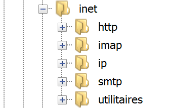
16.1. Noções básicas de programação na Internet
16.1.1. Generalidades
Consideremos a comunicação entre duas máquinas remotas A e B:
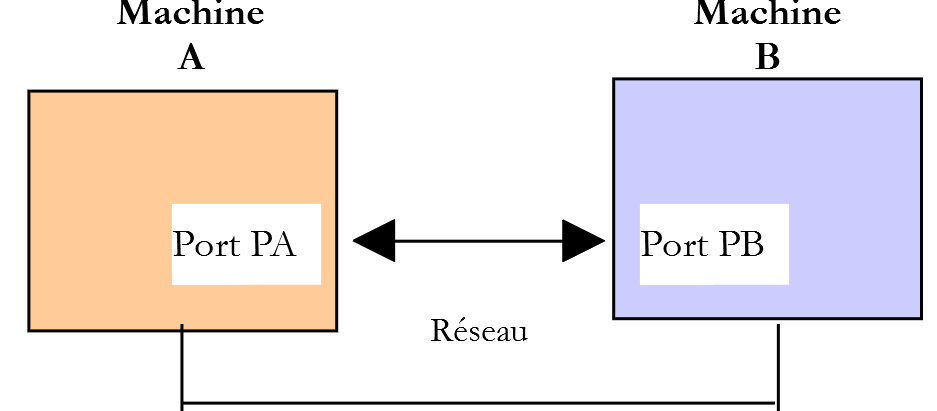
Quando uma aplicação AppA da máquina A pretende comunicar com uma aplicação AppB da máquina B na Internet, tem de saber várias coisas:
- o endereço IP (Protocolo de Internet) ou o nome da máquina B;
- o número da porta com a qual a aplicação AppB opera. Com efeito, a máquina B pode suportar várias aplicações que operam na Internet. Quando recebe informações provenientes da rede, tem de saber a que aplicação essas informações se destinam. As aplicações da máquina B têm acesso à rede através de interfaces, também denominadas portas de comunicação. Esta informação está contida no pacote recebido pela máquina B, para que seja entregue à aplicação correta;
- os protocolos de comunicação compreendidos pela máquina B. No nosso estudo, utilizaremos apenas os protocolos TCP-IP;
- o protocolo de comunicação aceite pela aplicação AppB. Com efeito, as máquinas A e B vão «comunicar» entre si. O que vão comunicar será encapsulado nos protocolos TCP-IP. No entanto, quando, no final da cadeia, a aplicação AppB receber a informação enviada pela aplicação AppA, terá de ser capaz de a interpretar. Isto é análogo à situação em que duas pessoas, A e B, comunicam por telefone: o seu diálogo é transportado pelo telefone. A fala será codificada sob a forma de sinais pelo telefone A, transportada por linhas telefónicas, chegará ao telefone B para aí ser descodificada. A pessoa B ouve então as palavras. É aqui que entra o conceito de protocolo de diálogo: se A falar francês e B não compreender essa língua, A e B não poderão dialogar de forma útil;
Por isso, as duas aplicações que comunicam entre si têm de chegar a acordo quanto ao tipo de diálogo que vão adotar. Por exemplo, o diálogo com um serviço ftp não é o mesmo que com um serviço pop: estes dois serviços não aceitam os mesmos comandos. Têm um protocolo de diálogo diferente;
16.1.2. As características do protocolo TCP
Aqui, iremos analisar apenas as comunicações de rede que utilizam o protocolo de transporte TCP, cujas principais características são as seguintes:
- o processo que pretende transmitir estabelece, em primeiro lugar, uma ligação com o processo destinatário das informações que vai transmitir. Esta ligação é estabelecida entre uma porta da máquina emissora e uma porta da máquina recetora. Entre as duas portas é criado um caminho virtual, que ficará reservado exclusivamente aos dois processos que estabeleceram a ligação;
- todos os pacotes enviados pelo processo de origem seguem este caminho virtual e chegam na ordem em que foram enviados;
- a informação transmitida tem um caráter contínuo. O processo emissor envia informações ao seu próprio ritmo. Estas não são necessariamente enviadas de imediato: o protocolo TCP aguarda até ter quantidade suficiente para as enviar. São armazenadas numa estrutura denominada segmento TCP. Este segmento, uma vez preenchido, será transmitido para a camada IP, onde será encapsulado num pacote IP;
- cada segmento enviado pelo protocolo TCP é numerado. O protocolo TCP destinatário verifica se recebe os segmentos na sequência correta. Por cada segmento recebido corretamente, envia um aviso de receção ao remetente;
- quando este último o recebe, notifica o processo emissor. Este pode, assim, saber que um segmento chegou ao destino;
- se, após um determinado período de tempo, o protocolo TCP que emitiu um segmento não receber uma confirmação de receção, reenvia o segmento em questão, garantindo assim a qualidade do serviço de encaminhamento da informação;
- o circuito virtual estabelecido entre os dois processos que comunicam entre si é o full-duplex: isto significa que a informação pode transitar nos dois sentidos. Assim, o processo de destino pode enviar confirmações de receção mesmo enquanto o processo de origem continua a enviar informações. Isto permite, por exemplo, que o protocolo de origem TCP envie vários segmentos sem esperar por uma confirmação de receção. Se, após algum tempo, verificar que não recebeu a confirmação de receção de um determinado segmento n.º n, retomará a transmissão dos segmentos a partir desse ponto;
16.1.3. A relação cliente-servidor
Muitas vezes, a comunicação na Internet é assimétrica: a máquina A inicia uma ligação para solicitar um serviço à máquina B, especificando que pretende estabelecer uma ligação com o serviço SB1 da máquina B. Esta aceita ou recusa. Se aceitar, a máquina A pode enviar os seus pedidos ao serviço SB1. Estes devem estar em conformidade com o protocolo de comunicação compreendido pelo serviço SB1. Estabelece-se assim um diálogo de pedido-resposta entre a máquina A, a que se chama máquina cliente, e a máquina B, a que se chama máquina servidor. Um dos dois parceiros encerrará a ligação.
16.1.4. Arquitetura de um cliente
A arquitetura de um programa de rede que solicita os serviços de uma aplicação servidor será a seguinte:
ouvrir la connexion avec le service SB1 de la machine B
si réussite alors
tant que ce n'est pas fini
préparer une demande
l'émettre vers la machine B
attendre et récupérer la réponse
la traiter
fin tant que
finsi
fermer la connexion
16.1.5. Arquitetura de um servidor
A arquitetura de um programa que presta serviços será a seguinte:
ouvrir le service sur la machine locale
tant que le service est ouvert
se mettre à l'écoute des demandes de connexion sur un port dit port d'écoute
lorsqu'il y a une demande, la faire traiter par une autre tâche sur un autre port dit port de service
fin tant que
O programa servidor trata de forma diferente o pedido de ligação inicial de um cliente das suas solicitações posteriores destinadas a obter um serviço. O programa não presta o serviço propriamente dito. Se o fizesse, durante o período em que o serviço estivesse a ser prestado, deixaria de estar à escuta dos pedidos de ligação e os clientes não seriam, então, atendidos. Por isso, procede de outra forma: assim que uma solicitação de ligação é recebida na porta de escuta e, em seguida, aceite, o servidor cria uma tarefa encarregada de prestar o serviço solicitado pelo cliente. Este serviço é prestado numa outra porta da máquina servidor, denominada porta de serviço. Desta forma, é possível atender vários clientes ao mesmo tempo.
Uma tarefa de serviço terá a seguinte estrutura:
tant que le service n'a pas été rendu totalement
attendre une demande sur le port de service
lorsqu'il y en a une, élaborer la réponse
transmettre la réponse via le port de service
fin tant que
libérer le port de service
16.2. Descobrir os protocolos de comunicação da Internet
16.2.1. Introdução
Quando um cliente se liga a um servidor, estabelece-se um diálogo entre ambos. A natureza desse diálogo constitui o que se denomina protocolo de comunicação do servidor. Entre os protocolos mais comuns da Internet, encontram-se os seguintes:
- HTTP: HyperText Transfer Protocol — o protocolo de comunicação com um servidor web (servidor HTTP);
- SMTP: Simple Mail Transfer Protocol — o protocolo de comunicação com um servidor de envio de correio eletrónico (servidor SMTP);
- POP: Post Office Protocol — o protocolo de comunicação com um servidor de armazenamento de correio eletrónico (servidor POP). Trata-se aqui de recuperar os e-mails recebidos e não de os enviar;
- IMAP: Internet Message Access Protocol — o protocolo de comunicação com um servidor de armazenamento de correio eletrónico (servidor IMAP). Este protocolo substituiu progressivamente o protocolo mais antigo POP;
- FTP: File Transfer Protocol — o protocolo de comunicação com um servidor de armazenamento de ficheiros (servidor FTP);
Todos estes protocolos têm a particularidade de serem protocolos de linhas de texto: o cliente e o servidor trocam entre si linhas de texto. Se tivermos um cliente capaz de:
- estabelecer uma ligação com um servidor TCP;
- exibir na consola as linhas de texto que o servidor lhe envia;
- enviar para o servidor as linhas de texto que um utilizador introduziria através do teclado;
assim, é possível comunicar com um servidor TCP que utilize um protocolo de linhas de texto, desde que se conheçam as regras desse protocolo.
16.2.2. Utilitários TCP

Nos códigos associados a este documento, encontram-se dois utilitários de comunicação TCP:
- O [RawTcpClient] permite ligar-se à porta P de um servidor S;
- O [RawTcpServer] permite criar um servidor que aguarda clientes na porta P;
O servidor TCP [RawTcpServer]é chamado com a sintaxe [RawTcpServeur port] para criar um serviço TCP na porta [port] da máquina local (o computador em que está a trabalhar):
- o servidor pode atender vários clientes simultaneamente;
- o servidor executa os comandos digitados pelo utilizador no teclado. Estes são os seguintes:
- list: lista os clientes atualmente ligados ao servidor. Estes são apresentados no formato [id=x-nom=y]. O campo [id] serve para identificar os clientes;
- send x [texte]: envia texto para o cliente n.º x (id=x). Os colchetes [] não são enviados. São necessários no comando. Servem para delimitar visualmente o texto enviado ao cliente;
- close x: encerra a ligação com o cliente n.º x;
- quit: encerra todas as ligações e interrompe o serviço;
- as linhas enviadas pelo cliente para o servidor são apresentadas na consola;
- todas as trocas de dados são registadas num ficheiro de texto com o nome [machine-portService.txt], em que
- [machine] é o nome da máquina na qual o código está a ser executado;
- [port] é a porta do serviço que responde aos pedidos do cliente;
O cliente TCP [RawTcpClient] é chamado com a sintaxe [RawTcpClient serveur port] para se ligar à porta [port] do servidor [serveur]:
- as linhas digitadas pelo utilizador no teclado são enviadas para o servidor;
- as linhas enviadas pelo servidor são apresentadas na consola;
- todas as trocas de dados são registadas num ficheiro de texto com o nome [serveur-port.txt];
Vejamos um exemplo. Abrimos duas janelas de comandos do Windows e, em cada uma delas, acedemos à pasta dos utilitários. Numa das janelas, iniciamos o servidor [RawTcpServer] na porta 100:

- no [1], estamos na pasta dos utilitários;
- no [2], iniciamos o servidor TCP na porta 100;
- em [3], o servidor fica à espera de um cliente TCP;
- em [4], o servidor aguarda um comando digitado pelo utilizador no teclado;
Na outra janela de comandos, inicia-se o cliente TCP:

- no [5], estamos na pasta dos utilitários;
- em [6], iniciamos o cliente TCP: indicamos-lhe que se ligue à porta 100 da máquina local (aquela com a qual está a trabalhar);
- em [7], o cliente conseguiu ligar-se ao servidor. Indicam-se as coordenadas do cliente: este encontra-se na máquina [DESKTOP-528I5CU] (a máquina local neste exemplo) e utiliza a porta [50405] para comunicar com o servidor:
- em [8], o cliente aguarda um comando digitado pelo utilizador no teclado;
Voltemos à janela do servidor. O seu conteúdo mudou:

- em [9], foi detetado um cliente. O servidor atribuiu-lhe o n.º 1. O servidor identificou corretamente o cliente remoto (máquina e porta);
- em [10], o servidor volta a ficar à espera de um novo cliente;
Voltemos à janela do cliente e enviemos um comando ao servidor:

- em [11], o comando enviado ao servidor;
Voltemos à janela do servidor. O seu conteúdo mudou:

- em [12], entre parênteses, a mensagem recebida pelo servidor;
Vamos enviar uma resposta ao cliente:

- para [13], a resposta enviada ao cliente 1. Apenas o texto entre os colchetes é enviado, não os próprios colchetes;
Voltemos à janela do cliente:

- em [14], a resposta recebida pelo cliente. O texto recebido é o que está entre parênteses;
Voltemos à janela do servidor para ver outros comandos:

- em [15], solicitamos a lista de clientes;
- em [16], a resposta;
- em [17], encerramos a ligação com o cliente n.º 1;
- em [18], a confirmação do servidor;
- em [19], desligamos o servidor;
- em [20], a confirmação do servidor;
Voltemos à janela do cliente:

- em [21], o cliente detetou o fim do serviço;
Foram criados dois ficheiros de registo, um para o servidor e outro para o cliente:

- em [25], os registos do servidor: o nome do ficheiro é o nome do cliente [machine-port];
- em [26], os registos do cliente: o nome do ficheiro é o nome do servidor [machine-port];
Os registos do servidor são os seguintes:
Os registos do cliente são os seguintes:
16.3. Obter o nome ou o endereço IP de um computador na Internet

Os computadores na Internet são identificados por um endereço IP (IPv4 ou IPv6) e, na maioria das vezes, por um nome. Mas, em última análise, apenas o endereço IP é utilizado. Por isso, por vezes é necessário saber o endereço IP de um computador identificado pelo seu nome.
O script [ip-01.php] é o seguinte:
<?php
// respeito rigoroso dos tipos declarados dos parâmetros das funções
declare (strict_types=1);
//
// gestão de erros
error_reporting(E_ALL & E_STRICT);
ini_set("display_errors", "on");
//
// constantes
$HOTES = array("istia.univ-angers.fr", "www.univ-angers.fr", "www.ibm.com", "localhost", "", "xx");
// endereços IP e nomes das máquinas de $HOTES
for ($i = 0; $i < count($HOTES); $i++) {
getIPandName($HOTES[$i]);
}
// fim
print "Terminé\n";
exit;
//------------------------------------------------
function getIPandName(string $nomMachine): void {
//$nomMachine: nome da máquina cujo endereço se pretende obter IP
//
// nomMachine-->endereço IP
$ip = gethostbyname($nomMachine);
print "---------------\n";
if ($ip !== $nomMachine) {
print "ip[$nomMachine]=$ip\n";
// endereço IP --> nomMachine
$name = gethostbyaddr($ip);
if ($name !== $ip) {
print "name[$ip]=$name\n";
} else {
print "Erreur, machine[$ip] non trouvée\n";
}
} else {
print "Erreur, machine[$nomMachine] non trouvée\n";
}
}
Comentários
- linhas 7-8: solicita-se que o PHP sinalize todos os erros (E_ALL e E_STRICT) e que estes sejam apresentados. Este modo só é recomendado no modo de desenvolvimento para melhorar o código com os avisos do PHP. No modo de produção, na linha 8, deve-se definir «off». A partir da versão 5.4 do PHP, o nível E_STRICT está incluído no E_ALL;
- linha 11: a lista de máquinas cujo nome e endereço se pretende obter IP;
As funções de rede de PHP são utilizadas na função getIpandName da linha 21.
- linha 25: a função gethostbyname($nom) permite obter o endereço IP «ip3.ip2.ip1.ip0» da máquina denominada $nom. Se a máquina $nom não existir, a função devolve $nom como resultado;
- linha 30: a função gethostbyaddr($ip) permite obter o nome da máquina com o endereço $ip, na forma «ip3.ip2.ip1.ip0». Se a máquina $ip não existir, a função devolve $ip como resultado;
Resultados:
---------------
ip[istia.univ-angers.fr]=193.49.144.41
name[193.49.144.41]=ametys-fo-2.univ-angers.fr
---------------
ip[www.univ-angers.fr]=193.49.144.41
name[193.49.144.41]=ametys-fo-2.univ-angers.fr
---------------
ip[www.ibm.com]=2.18.220.211
name[2.18.220.211]=a2-18-220-211.deploy.static.akamaitechnologies.com
---------------
ip[localhost]=127.0.0.1
name[127.0.0.1]=DESKTOP-528I5CU
---------------
ip[]=192.168.1.38
name[192.168.1.38]=DESKTOP-528I5CU.home
---------------
Erreur, machine[xx] non trouvée
Terminé
16.4. O protocolo HTTP (Protocolo de Transferência HyperText)
16.4.1. Exemplo 1

Quando um navegador apresenta um URL, este atua como cliente de um servidor web ou, por outras palavras, de um servidor HTTP. É ele que toma a iniciativa e começa por enviar uma série de comandos ao servidor. Para este primeiro exemplo:
- o servidor será o utilitário [RawTcpServer];
- o cliente será um navegador;
Primeiro, iniciamos o servidor na porta 100:

Em seguida, com um navegador, solicitamos o URL [localhost:100], ou seja, indicamos que o servidor HTTP consultado está a funcionar na porta 100 do computador local:

Voltemos à janela do servidor:

- em [3], o cliente que se ligou;
- em [4-7], a sequência de linhas de texto que enviou:
- em [4]: esta linha tem o formato [GET URL HTTP/1.1]. Solicita o URL / e pede ao servidor para utilizar o protocolo HTTP 1.1;
- em [5]: esta linha tem o formato [Host: serveur:port]. As maiúsculas e minúsculas do comando [Host] não têm importância. Recorde-se aqui que o cliente consulta um servidor local a operar na porta 100;
- o comando [User-Agent] fornece a identidade do cliente;
- o comando [Accept] indica quais os tipos de documentos aceites pelo cliente;
- o comando [Accept-Language] indica em que língua se pretendem os documentos solicitados, caso existam em várias línguas;
- o comando [Connection] indica o modo de ligação pretendido: [keep-alive] indica que a ligação deve ser mantida até que as trocas de dados estejam concluídas;
- em [7]: o cliente termina os seus comandos com uma linha em branco;
Terminamos a ligação ao encerrar o servidor:

16.4.2. Exemplo 2
Agora que conhecemos os comandos enviados por um navegador para solicitar um URL, vamos solicitar este URL com o nosso cliente TCP [RawTcpClient]. O servidor Apache do Laragon será o nosso servidor web.
Vamos iniciar o Laragon e, em seguida, o servidor web Apache:
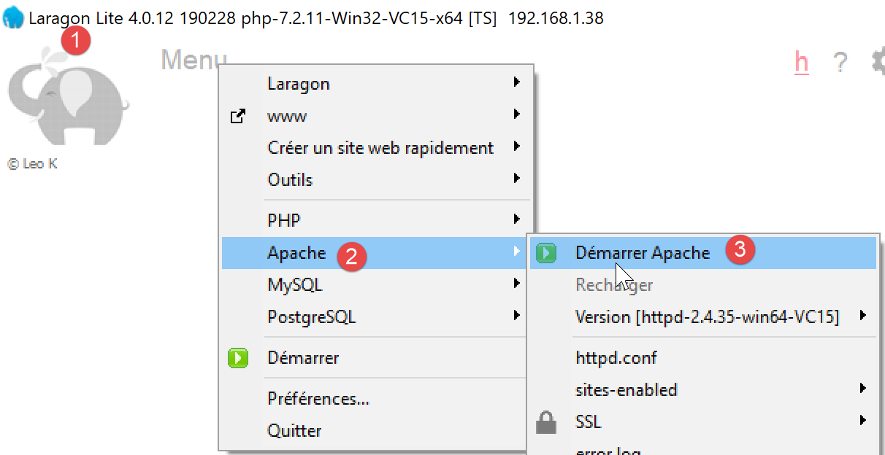

Agora, utilizando um navegador, vamos aceder a URL e [http://localhost:80]. Aqui, especificamos apenas o servidor [localhost:80] e não o documento URL. Neste caso, é o URL / que é solicitado, ou seja, a raiz do servidor web:

- em [1], o URL solicitado. Inicialmente, digitámos [http://localhost:80] e o navegador (Firefox, neste caso) transformou-a simplesmente em [localhost], uma vez que o protocolo [http] é implícito quando nenhum protocolo é mencionado e a porta [80] é implícita quando a porta não é especificada;
- em [2], a página raiz / do servidor web consultado;
Agora, vamos visualizar o texto recebido pelo navegador:

- Clicamos com o botão direito do rato na página recebida e selecionamos a opção [2]. Obtemos o seguinte código-fonte:
Agora, vamos solicitar o URL e o [http://localhost:80] através do nosso cliente TCP:

- no [1], ligamo-nos à porta 80 do servidor localhost. É aí que funciona o servidor web do Laragon;
Digitamos agora os comandos que descobrimos no parágrafo anterior:

- no [1], o comando [GET]. Solicitamos a raiz / do servidor web;
- em [2], o comando [Host];
- estas são as duas únicas ordens indispensáveis. Para as restantes ordens, o servidor web utilizará os valores por predefinição;
- em [3], a linha vazia que deve encerrar os comandos do cliente;
- abaixo da linha 3, surge a resposta do servidor web;
- em [4] até à linha vazia [5] vêm os cabeçalhos HTTP da resposta do servidor;
- após a linha [5] surge o documento HTML solicitado em [6];
Digitamos [quit] para encerrar o cliente e carregamos o ficheiro de registos [localhost-80.txt]:
- linhas 11-79: o documento HTML recebido. No exemplo anterior, o Firefox tinha recebido o mesmo;
Temos agora as bases para programar um cliente TCP que solicitaria um URL.
16.4.3. Exemplo 3

O script [http-01.php] é um cliente HTTP configurado pelo ficheiro jSON [config-http-01.json]. O conteúdo deste é o seguinte:
- linha 2: o nome do computador que aloja o servidor web a aceder;
- linha 3: a porta em que este servidor web opera;
- linha 4: o URL do documento pretendido;
- linha 5: a máquina de destino no formato máquina:porta;
- linha 6: a identificação do cliente HTTP: pode-se colocar o que se quiser;
- linha 7: o tipo de documento aceite pelo cliente, neste caso texto HTML;
- linha 8: o idioma pretendido para o documento solicitado;
- linha 9: o caractere de fim de linha para os comandos enviados pelo cliente: na verdade, pode variar consoante o servidor esteja numa máquina Unix (\n) ou Windows (\r\n);
O script [http-01.php] é o seguinte:
<?php
// respeito rigoroso pelos tipos declarados dos parâmetros das funções
declare (strict_types=1);
//
// gestão de erros
// error_reporting(E_ALL & E_STRICT);
// ini_set("display_errors", "on");
//
// constantes
const CONFIG_FILE_NAME = "config-http-01.json";
//
// recuperar a configuração
$config = \json_decode(\file_get_contents(CONFIG_FILE_NAME), true);
// obter o texto HTML dos URL do ficheiro de configuração
foreach ($config as $site => $protocole) {
// leitura da página inicial do site $ite
$résultat = getURL($site, $protocole);
// exibição do resultado
print "$résultat\n";
}//para
// fim
exit;
//-----------------------------------------------------------------------
function getURL(string $site, array $protocole, $suivi = TRUE): string {
// lê o $siteURL e armazena-o no ficheiro $site.HTML
// o diálogo cliente/servidor é realizado de acordo com o protocolo $protocole
//
// abertura de uma ligação na porta de $site
$erreurNumber = 0;
$erreur = "";
$connexion = fsockopen($site, $protocole["port"], $erreurNumber, $erreur);
// retorno em caso de erro
if ($connexion === FALSE) {
return "Echec de la connexion au site (" . $site . " ," . $protocole["port"] . " : $erreur";
}
// $connexion representa um fluxo de comunicação bidirecional
// entre o cliente (este programa) e o servidor web contactado
// este canal é utilizado para a troca de comandos e informações
// o protocolo de comunicação é HTTP
//
// criação do ficheiro $site.HTML
$HTML = fopen("output/$site.HTML", "w");
if ($HTML === FALSE) {
// encerramento da ligação cliente/servidor
fclose($connexion);
// retorno de erro
return "Erreur lors de la création du fichier $site.HTML";
}
// o cliente vai iniciar o diálogo HTTP com o servidor
if ($suivi) {
print "Client : début de la communication avec le serveur [$site] ----------------------------\n";
}
// dependendo dos servidores, as linhas do cliente devem terminar com \n ou \r\n
$endOfLine = $protocole["endOfLine"];
// por uma questão de simplificação, não se testam os casos de erro na comunicação cliente/servidor
// o cliente envia o comando GET para solicitar o $protocolo["GET"]
// sintaxe GET URL HTTP/1.1
$commande = "GET " . $protocole["GET"] . " HTTP/1.1$endOfLine";
// acompanhamento?
if ($suivi) {
print "--> $commande";
}
// envia-se o comando para o servidor
fputs($connexion, $commande);
// envio dos restantes cabeçalhos HTTP
foreach ($protocole as $verb => $value) {
if ($verb !== "GET" && $verb != "port"" && $verb !="endOfLine") {
// construção do comando
$commande = "$verb: $value$endOfLine";
// seguimento?
if ($suivi) {
print "--> $commande";
}
// envia-se o comando para o servidor
fputs($connexion, $commande);
}
}
// os cabeçalhos (headers) do protocolo HTTP devem terminar com uma linha em branco
fputs($connexion, $endOfLine);
//
// o servidor vai agora responder no canal $connexion. Vai enviar todos
// os seus dados e, em seguida, encerrará o canal. O cliente lê, portanto, tudo o que chega de $connexion
// até ao encerramento do canal
//
// primeiro lêem-se os cabeçalhos HTTP enviados pelo servidor
// que também terminam com uma linha em branco
if ($suivi) {
print "Réponse du serveur [$site] ----------------------------\n";
}
$fini = FALSE;
while (!$fini && $ligne = fgets($connexion, 1000)) {
// existe uma linha vazia?
$champs = [];
preg_match("/^(.*?)\s+$/", $ligne, $champs);
if ($champs[1] !== "") {
if ($suivi) {
// exibimos o cabeçalho HTTP
print "<-- " . $champs[1] . "\n";
}
} else {
// era a linha vazia — os cabeçalhos HTTP terminaram
$fini = TRUE;
}
}
// está a ler o documento HTML que se seguirá à linha em branco
while ($ligne = fgets($connexion, 1000)) {
// a linha é guardada no ficheiro HTML do site
fputs($HTML, $ligne);
}
// o servidor encerrou a ligação - o cliente encerra-a também
fclose($connexion);
// encerramento do ficheiro $HTML
fclose($HTML);
// retorno
return "Fin de la communication avec le site [$site]. Vérifiez le fichier [$site.HTML]";
}
Comentários ao código:
- linha 14: o ficheiro de configuração é utilizado para criar um dicionário:
- as chaves do dicionário são os servidores web a consultar;
- os valores definem o protocolo HTTP a seguir;
- linhas 16-21: é feito um ciclo pela lista de servidores web da configuração;
- linha 26: a função getURL($site,$protocole,$suivi) solicita um documento do site $site e armazena-o no ficheiro de texto $site.HTML.Par: por predefinição, as trocas cliente/servidor são registadas na consola ($suivi=TRUE);
- linha 33: a função fsockopen($site,$port,$errNumber,$erreur) permite estabelecer uma ligação com um serviço TCP / IP que funciona na porta $port da máquina $site. Se a ligação falhar, [$errNumber] é o número de erro e [$erreur] a mensagem de erro associada. Assim que a ligação cliente/servidor for estabelecida, vários serviços TCP / IP trocam linhas de texto. É o caso, neste caso, do protocolo HTTP (HyperText Transfer Protocol). O fluxo do servidor que chega ao cliente pode então ser tratado como um ficheiro de texto lido com o [fgets]. O mesmo se aplica ao fluxo que parte do cliente para o servidor, que pode ser gravado com o [fputs];
- linhas 44-50: criação do ficheiro [$site.HTML], no qual será guardado o documento HTML recebido;
- linha 60: o primeiro comando do cliente deve ser o comando [GET URL HTTP/1.1];
- linha 66: a função fputs permite ao cliente enviar dados para o servidor. Aqui, a linha de texto enviada tem o seguinte significado: «Quero (GET) a página [URL] do site ao qual estou ligado. Estou a trabalhar com o protocolo HTTP, versão 1.1»;
- linhas 68-79: enviam-se as restantes linhas do protocolo HTTP [Host, User-Agent, Accept, Accept-Language]. A sua ordem não importa;
- linha 81: envia-se uma linha vazia ao servidor para indicar que o cliente terminou de enviar os seus cabeçalhos HTTP e que aguarda agora o documento solicitado;
- linhas 92-106: o servidor irá, em primeiro lugar, enviar uma série de cabeçalhos HTTP que fornecerão diversas informações sobre o documento solicitado. Estes cabeçalhos terminam com uma linha vazia;
- linha 93: lê-se uma linha enviada pelo servidor com a função PHP [fgets];
- linha 96: recupera-se o corpo da linha sem os espaços (espaços em branco, marca de fim de linha) do fim da linha;
- linha 97: verifica-se se foi recuperada a linha vazia que marca o fim dos cabeçalhos HTTP enviados pelo servidor;
- linhas 98-101: se estivermos no modo [suivi], o cabeçalho HTTP recebido é apresentado na consola;
- linhas 108-111: as linhas de texto da resposta do servidor podem ser lidas linha a linha com um ciclo while e guardadas no ficheiro de texto [output/$site.HTML]. Quando o servidor web tiver enviado a página na íntegra, tal como solicitado, encerra a sua ligação com o cliente. Do lado do cliente, isto será detetado como um fim de ficheiro;
Resultados:
A consola apresenta os seguintes registos:
Client : début de la communication avec le serveur [localhost] ----------------------------
--> GET / HTTP/1.1
--> Host: localhost:80
--> User-Agent: client PHP
--> Accept: text/HTML
--> Accept-Language: fr
Réponse du serveur [localhost] ----------------------------
<-- HTTP/1.1 200 OK
<-- Date: Thu, 16 May 2019 15:43:18 GMT
<-- Server: Apache/2.4.35 (Win64) OpenSSL/1.1.0i PHP/7.2.11
<-- X-Powered-By: PHP/7.2.11
<-- Content-Length: 1781
<-- Content-Type: text/HTML; charset=UTF-8
Fin de la communication avec le site [localhost]. Vérifiez le fichier [localhost.HTML]
No nosso exemplo, o ficheiro [output/localhost.HTML] recebido é o seguinte:
<!DOCTYPE HTML>
<HTML>
<head>
<title>Laragon</title>
<link href="https://fonts.googleapis.com/css?family=Karla:400" rel="stylesheet" type="text/css">
<style>
HTML, body {
height: 100%;
}
body {
margin: 0;
padding: 0;
width: 100%;
display: table;
font-weight: 100;
font-family: 'Karla';
}
.container {
text-align: center;
display: table-cell;
vertical-align: middle;
}
.content {
text-align: center;
display: inline-block;
}
.title {
font-size: 96px;
}
.opt {
margin-top: 30px;
}
.opt a {
text-decoration: none;
font-size: 150%;
}
a:hover {
color: red;
}
</style>
</head>
<body>
<div class="container">
<div class="content">
<div class="title" title="Laragon">Laragon</div>
<div class="info"><br />
Apache/2.4.35 (Win64) OpenSSL/1.1.0i PHP/7.2.11<br />
PHP version: 7.2.11 <span><a title="phpinfo()" href="/?q=info">info</a></span><br />
Document Root: C:/myprograms/laragon-lite/www<br />
</div>
<div class="opt">
<div><a title="Getting Started" href="https://laragon.org/docs">Getting Started</a></div>
</div>
</div>
</div>
</body>
</HTML>
Conseguimos, de facto, o mesmo documento que com o navegador Firefox.
16.4.4. Exemplo 4
Neste exemplo, vamos mostrar que o cliente HTTP que criámos é insuficiente. Vamos alterar o ficheiro de configuração [config-http-01.json] da seguinte forma:
Aqui, vamos solicitar o URL [http://tahe.developpez.com:443/]. A porta 443 da máquina [tahe.developpez.com] é uma porta utilizada para o protocolo HTTP seguro, denominado HTTPS. Neste protocolo, a comunicação cliente/servidor começa com uma troca de informações que irá proteger a ligação. O cliente deve, então, utilizar o protocolo [HTTPS] e não o protocolo [HTTP], o que o nosso cliente não faz.
Com este ficheiro de configuração, os resultados apresentados na consola são os seguintes:
Client : début de la communication avec le serveur [tahe.developpez.com] ----------------------------
--> GET / HTTP/1.1
--> Host: sergetahe.com:443
--> User-Agent: script PHP 7
--> Accept: text/HTML
--> Accept-Language: fr
Réponse du serveur [tahe.developpez.com] ----------------------------
<-- HTTP/1.1 400 Bad Request
<-- Date: Fri, 17 May 2019 13:02:26 GMT
<-- Server: Apache/2.4.25 (Debian)
<-- Content-Length: 454
<-- Connection: close
<-- Content-Type: text/HTML; charset=iso-8859-1
Fin de la communication avec le site [tahe.developpez.com]. Vérifiez le fichier [output/tahe.developpez.com.HTML]
- linha 8: o servidor [tahe.developpez.com] respondeu que o pedido do cliente estava incorreto;
O conteúdo do ficheiro [output/tahe.developpez.com.HTML] é, então, o seguinte:
<!DOCTYPE HTML PUBLIC "-//IETF//DTD HTML 2.0//EN">
<HTML><head>
<title>400 Bad Request</title>
</head><body>
<h1>Bad Request</h1>
<p>Your browser sent a request that this server could not understand.<br />
Reason: You're speaking plain HTTP to an SSL-enabled server port.<br />
Instead use the HTTPS scheme to access this URL, please.<br />
</p>
<hr>
<address>Apache/2.4.25 (Debian) Server at 2eurocents.developpez.com Port 443</address>
</body></HTML>
O servidor indica claramente que não utilizámos o protocolo correto.
Vamos agora utilizar o seguinte ficheiro de configuração:
Os resultados na consola são então os seguintes:
Client : début de la communication avec le serveur [sergetahe.com] ----------------------------
--> GET /cours-tutoriels-de-programmation/ HTTP/1.1
--> Host: sergetahe.com:80
--> User-Agent: script PHP 7
--> Accept: text/HTML
--> Accept-Language: fr
Réponse du serveur [sergetahe.com] ----------------------------
<-- HTTP/1.1 200 OK
<-- Date: Fri, 17 May 2019 13:36:06 GMT
<-- Content-Type: text/HTML; charset=UTF-8
<-- Transfer-Encoding: chunked
<-- Server: Apache
<-- X-Powered-By: PHP/7.0
<-- Vary: Accept-Encoding
<-- Set-Cookie: SERVERID68971=2621207|XN64y|XN64y; path=/
<-- Cache-control: private
<-- X-IPLB-Instance: 17106
Fin de la communication avec le site [sergetahe.com]. Vérifiez le fichier [output/sergetahe.com.HTML]
- a linha 11 indica que o servidor envia o documento em partes;
Isto traduz-se na presença de números no fluxo enviado ao cliente: cada número indica ao cliente o número de caracteres da próxima parte enviada pelo servidor. Eis o resultado no ficheiro [output/sergetahe.com.HTML]:

- em [1] e [2], o tamanho em hexadecimal dos fragmentos 1 e 2 do documento;
Um cliente HTTP correto não deveria deixar estes números no documento HTML final.
Eis outro exemplo:
É semelhante ao exemplo anterior, mas o URL solicitado na linha 4 não tem o carácter / para o terminar. Não se trata dos mesmos URL. A execução do cliente HTTP apresenta então os seguintes resultados na consola:
Client : début de la communication avec le serveur [sergetahe.com] ----------------------------
--> GET /cours-tutoriels-de-programmation HTTP/1.1
--> Host: sergetahe.com:80
--> User-Agent: script PHP 7
--> Accept: text/HTML
--> Accept-Language: fr
Réponse du serveur [sergetahe.com] ----------------------------
<-- HTTP/1.1 301 Moved Permanently
<-- Date: Fri, 17 May 2019 13:47:00 GMT
<-- Content-Type: text/HTML; charset=iso-8859-1
<-- Content-Length: 262
<-- Server: Apache
<-- Location: http://sergetahe.com:80/cursos-tutoriais-de-programação/
<-- Set-Cookie: SERVERID68971=2621207|XN67V|XN67V; path=/
<-- Cache-control: private
<-- X-IPLB-Instance: 17095
Fin de la communication avec le site [sergetahe.com]. Vérifiez le fichier [output/sergetahe.com.HTML]
- a linha 8 indica que o documento solicitado mudou de URL. O novo URL é apresentado na linha 13. Repare, desta vez, no carácter / que termina o novo URL;
O ficheiro [output/serge.tahe.com.HTML] é, então, o seguinte:
<!DOCTYPE HTML PUBLIC "-//IETF//DTD HTML 2.0//EN">
<HTML><head>
<title>301 Moved Permanently</title>
</head><body>
<h1>Moved Permanently</h1>
<p>The document has moved <a href="http://sergetahe.com/cours-tutoriels-de-programmation/">here</a>.</p>
</body></HTML>
Um cliente HTTP deverá conseguir seguir os redirecionamentos. Neste caso, deverá solicitar automaticamente a nova URL [http://sergetahe.com/cours-tutoriels-de-programmation/].
16.4.5. Exemplo 5
Os exemplos anteriores mostraram-nos que o nosso cliente HTTP era insuficiente. Vamos agora apresentar uma ferramenta chamada [curl] que permite recuperar documentos da Web, gerindo as dificuldades mencionadas: protocolo HTTPS, documento enviado em partes, redirecionamentos… A ferramenta [curl] foi instalada com o Laragon:

Abramos um terminal Laragon [1]:

No terminal, digitamos o seguinte comando:

- em [1], o tipo da consola;
- em [2], a pasta atual. Esta pasta é especial: é aqui que o servidor Apache do Laragon vai buscar os documentos que lhe são solicitados. Por isso, devemos evitar sobrecarregar esta pasta;
- em [3], o comando introduzido;
É possível que o comando [curl --help] produza um erro. A causa mais provável é não ter o tipo correto de terminal. Nesse caso, abra outro terminal com os comandos [4-6];
O comando [curl --help] exibe todas as opções de configuração do [curl]. Existem várias dezenas delas. Iremos utilizar muito poucas delas. Para solicitar um URL, basta digitar o comando [curl URL]. Este comando irá apresentar na consola o documento solicitado. Se, além disso, quisermos ver as trocas de dados HTTP entre o cliente e o servidor, escreveremos [curl --verbose URL]. Por fim, para guardar o documento HTML solicitado num ficheiro, escreveremos [curl --verbose --output fichier URL].
Para evitar sobrecarregar a pasta [www] do Laragon, vamos deslocar-nos para outro local do sistema de ficheiros:

- em [1], deslocamo-nos para a pasta [c:\temp]. Se esta pasta não existir, pode criá-la ou escolher outra;
- em [2], criamos uma pasta chamada [curl];
- em [3], seleciona-se essa pasta;
- em [4], listamos o seu conteúdo. Está vazio;
Certifique-se de que o servidor Apache do Laragon está em execução e, a partir de [curl], solicite os diretórios URL e [http://localhost/] com o comando [curl –verbose –output localhost.HTML http://localhost/]. Obtêm-se os seguintes resultados:
c:\Temp\curl
λ curl --verbose --output localhost.HTML http://localhost/
% Total % Received % Xferd Average Speed Time Time Time Current
Dload Upload Total Spent Left Speed
0 0 0 0 0 0 0 0 --:--:-- --:--:-- --:--:-- 0* Trying ::1…
* TCP_NODELAY set
* Connected to localhost (::1) port 80 (#0)
> GET / HTTP/1.1
> Host: localhost
> User-Agent: curl/7.63.0
> Accept: */*
>
< HTTP/1.1 200 OK
< Date: Fri, 17 May 2019 14:32:47 GMT
< Server: Apache/2.4.35 (Win64) OpenSSL/1.1.0i PHP/7.2.11
< X-Powered-By: PHP/7.2.11
< Content-Length: 1781
< Content-Type: text/HTML; charset=UTF-8
<
{ [1781 bytes data]
100 1781 100 1781 0 0 14248 0 --:--:-- --:--:-- --:--:-- 14248
* Connection #0 para o host localhost mantido inalterado
- linhas 8-12: linhas enviadas por [curl] para o servidor [localhost]. Reconhece-se o protocolo HTTP;
- linhas 13-19: linhas enviadas em resposta pelo servidor;
- linha 13: indica que o documento solicitado foi efetivamente recebido;
O ficheiro [localhost.HTML] contém o documento solicitado. Pode verificar isso abrindo o ficheiro num editor de texto.
Agora, vamos solicitar o URL [https://tahe.developpez.com:443/]. Para obter este URL, o cliente HTTP tem de saber comunicar em HTTPS. É o caso do cliente [curl].
Os resultados da consola são os seguintes:
c:\Temp\curl
λ curl --verbose --output tahe.developpez.com.HTML https://tahe.developpez.com:443/
% Total % Received % Xferd Average Speed Time Time Time Current
Dload Upload Total Spent Left Speed
0 0 0 0 0 0 0 0 --:--:-- --:--:-- --:--:-- 0* Trying 87.98.130.52…
* TCP_NODELAY set
* Connected to tahe.developpez.com (87.98.130.52) port 443 (#0)
* ALPN, offering h2
* ALPN, offering http/1.1
* successfully set certificate verify locations:
* CAfile: C:\myprograms\laragon-lite\bin\laragon\utils\curl-ca-bundle.crt
CApath: none
} [5 bytes data]
* TLSv1.3 (OUT), TLS handshake, Client hello (1):
} [512 bytes data]
* TLSv1.3 (IN), TLS handshake, Server hello (2):
{ [108 bytes data]
* TLSv1.2 (IN), TLS handshake, Certificate (11):
{ [2558 bytes data]
* TLSv1.2 (IN), TLS handshake, Server key exchange (12):
{ [333 bytes data]
* TLSv1.2 (IN), TLS handshake, Server finished (14):
{ [4 bytes data]
* TLSv1.2 (OUT), TLS handshake, Client key exchange (16):
} [70 bytes data]
* TLSv1.2 (OUT), TLS change cipher, Change cipher spec (1):
} [1 bytes data]
* TLSv1.2 (OUT), TLS handshake, Finished (20):
} [16 bytes data]
* TLSv1.2 (IN), TLS handshake, Finished (20):
{ [16 bytes data]
* SSL connection using TLSv1.2 / ECDHE-RSA-AES128-GCM-SHA256
* ALPN, server accepted to use http/1.1
* Server certificate:
* subject: CN=*.developpez.com
* start date: Apr 4 08:25:09 2019 GMT
* expire date: Jul 3 08:25:09 2019 GMT
* subjectAltName: host "tahe.developpez.com" matched cert's "*.developpez.com"
* issuer: C=US; O=Let's Encrypt; CN=Let's Encrypt Authority X3
* SSL certificate verify ok.
} [5 bytes data]
> GET / HTTP/1.1
> Host: tahe.developpez.com
> User-Agent: curl/7.63.0
> Accept: */*
>
{ [5 bytes data]
< HTTP/1.1 200 OK
< Date: Fri, 17 May 2019 14:39:41 GMT
< Server: Apache/2.4.25 (Debian)
< X-Powered-By: PHP/5.3.29
< Vary: Accept-Encoding
< Transfer-Encoding: chunked
< Content-Type: text/HTML
<
{ [6 bytes data]
100 96559 0 96559 0 0 163k 0 --:--:-- --:--:-- --:--:-- 163k
* Connection #0 para o host tahe.developpez.com mantido intacto
- linhas 10-40: as trocas entre cliente e servidor para proteger a ligação: esta será encriptada;
- linhas 42-45: os cabeçalhos HTTP enviados pelo cliente [curl] ao servidor;
- linha 48: o documento solicitado foi encontrado;
- linha 53: o documento é enviado em partes;
O [curl] gere corretamente tanto o protocolo seguro HTTPS como o facto de o documento ser enviado em partes. O documento enviado pode ser encontrado aqui no ficheiro [tahe.developpez.com.HTML].
Vamos agora solicitar o URL [http://sergetahe.com/cours-tutoriels-de-programmation]. Já tínhamos visto que, para este URL, havia um redirecionamento para o URL [http://sergetahe.com/cours-tutoriels-de-programmation/] (com um / no final).
Os resultados na consola são, então, os seguintes:
c:\Temp\curl
λ curl --verbose --output sergetahe.com.HTML --location http://sergetahe.com/cursos-tutoriais-de-programação
% Total % Received % Xferd Average Speed Time Time Time Current
Dload Upload Total Spent Left Speed
0 0 0 0 0 0 0 0 --:--:-- --:--:-- --:--:-- 0* Trying 87.98.154.146…
* TCP_NODELAY set
* Connected to sergetahe.com (87.98.154.146) port 80 (#0)
> GET /cours-tutoriels-de-programmation HTTP/1.1
> Host: sergetahe.com
> User-Agent: curl/7.63.0
> Accept: */*
>
< HTTP/1.1 301 Moved Permanently
< Date: Fri, 17 May 2019 15:13:03 GMT
< Content-Type: text/HTML; charset=iso-8859-1
< Content-Length: 262
< Server: Apache
< Location: http://sergetahe.com/cursos-e-tutoriais-de-programação/
< Set-Cookie: SERVERID68971=2621207|XN7Pg|XN7Pg; path=/
< Cache-control: private
< X-IPLB-Instance: 17095
<
* Ignoring the response-body
{ [262 bytes data]
100 262 100 262 0 0 1401 0 --:--:-- --:--:-- --:--:-- 1401
* Connection #0 para hospedar sergetahe.com mantido intacto
* Issue another request to this URL: 'http://sergetahe.com/cursos-tutoriais-de-programação/'
* Found bundle for host sergetahe.com: 0x1c88548 [can pipeline]
* Could pipeline, but not asked to!
* Re-using existing connection! (#0) com o host sergetahe.com
* Connected to sergetahe.com (87.98.154.146) port 80 (#0)
0 0 0 0 0 0 0 0 --:--:-- --:--:-- --:--:-- 0
> GET /cours-tutoriels-de-programmation/ HTTP/1.1
> Host: sergetahe.com
> User-Agent: curl/7.63.0
> Accept: */*
>
< HTTP/1.1 200 OK
< Date: Fri, 17 May 2019 15:13:04 GMT
< Content-Type: text/HTML; charset=UTF-8
< Transfer-Encoding: chunked
< Server: Apache
< X-Powered-By: PHP/7.0
< Vary: Accept-Encoding
< Set-Cookie: SERVERID68971=2621207|XN7Pg|XN7Pg; path=/
< Cache-control: private
< X-IPLB-Instance: 17095
<
{ [14205 bytes data]
100 43101 0 43101 0 0 78795 0 --:--:-- --:--:-- --:--:-- 168k
* Connection #0 para o host sergetahe.com, mantido intacto
- linha 2: utiliza-se a opção [--location] para indicar que se pretende seguir os redirecionamentos enviados pelo servidor;
- linha 13: o servidor indica que o documento solicitado mudou para URL;
- linha 18: indica o novo URL do documento solicitado;
- linha 27: o [curl] envia um novo pedido, desta vez para o novo URL;
- linha 33: é utilizada a nova URL;
- linha 38: o servidor responde que encontrou o documento solicitado;
- linha 41: envia-o em partes;
O documento solicitado será encontrado no ficheiro [sergetahe.com.HTML].
16.4.6. Exemplo 6
O ficheiro PHP possui uma extensão denominada [libcurl] que permite utilizar as funcionalidades da ferramenta [curl] num programa PHP. Em primeiro lugar, é necessário certificar-se de que esta extensão está ativada no ficheiro [php.ini] descrito no parágrafo «ligação»:
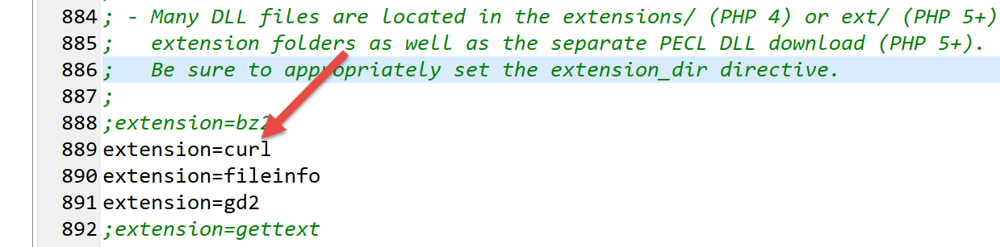
Certifique-se de que a linha 889 acima está descomentada.
Vamos escrever um script [http-02.php] que utilizará o seguinte ficheiro de configuração jSON:
Cada elemento do dicionário [clé, valeur] tem a seguinte estrutura:
- clé: o nome de um servidor web;
- valeur é um dicionário com as seguintes chaves:
- timeout: tempo máximo de espera pela resposta do servidor. Passado esse tempo, o cliente será desconectado;
- url: URL do documento solicitado;
O código do script [http-02.php] é o seguinte:
<?php
// respeito rigoroso dos tipos declarados dos parâmetros das funções
declare (strict_types=1);
//
// gestão de erros
//error_reporting(E_ALL & E_STRICT);
//ini_set("display_errors", "on");
//
// constantes
const CONFIG_FILE_NAME = "config-http-02.json";
//
// recuperar a configuração
$config = \json_decode(\file_get_contents(CONFIG_FILE_NAME), true);
// obter o texto HTML dos URL do ficheiro de configuração
foreach ($config as $site => $infos) {
// leitura de URL do site $ite
$résultat = getUrl($site, $infos["url"], $infos["timeout"]);
// exibição do resultado
print "$résultat\n";
}//para
// fim
exit;
//-----------------------------------------------------------------------
function getUrl(string $site, string $url, int $timeout, $suivi = TRUE): string {
// lê o ficheiro URL $url e guarda-o no ficheiro output/$site.HTML
//
// acompanhamento
print "Client : début de la communication avec le serveur [$site] ----------------------------\n";
// Inicialização de uma sessão cURL
$curl = curl_init($url);
if ($curl === FALSE) {
// ocorreu um erro
return "Erreur lors de l'initialisation de la session cURL pour le site [$site]";
}
// opções do curl
$options = [
// modo detalhado
CURLOPT_VERBOSE => true,
// nova ligação - sem cache
CURLOPT_FRESH_CONNECT => true,
// tempo limite da solicitação (em segundos)
CURLOPT_TIMEOUT => $timeout,
CURLOPT_CONNECTTIMEOUT => $timeout,
// não verificar a validade dos certificados SSL
CURLOPT_SSL_VERIFYPEER => false,
// seguir os redirecionamentos
CURLOPT_FOLLOWLOCATION => true,
// recuperação do documento solicitado na forma de uma cadeia de caracteres
CURLOPT_RETURNTRANSFER => true
];
// configuração do curl
curl_setopt_array($curl, $options);
// Execução da solicitação
$page_content = curl_exec($curl);
// Encerramento da sessão cURL
curl_close($curl);
// análise do resultado
if ($page_content !== FALSE) {
// registo do resultado em $site.HTML
$result = file_put_contents("output/$site.HTML", $page_content);
if ($result === FALSE) {
// retorno de erro
return "Erreur lors de la création du fichier [output/$site.HTML]";
}
// resposta com sucesso
return "Fin de la communication avec le serveur [$site]. Vérifiez le fichier [output/$site.HTML]";
} else {
// ocorreu um erro de comunicação
return "Erreur de communication avec le serveur [$site]";
}
}
Comentários
- linha 14: utiliza-se o ficheiro de configuração para criar o dicionário [$config];
- linhas 17-22: percorre-se a lista de sites encontrados na configuração;
- linha 19: para cada um dos sites, chama-se a função [getUrl], que irá descarregar oURL $infos[«url»] com um tempo limite $infos[«timeout»];
- linha 34: inicia-se uma sessão [curl]. A [curl_init] ainda não estabelece ligação ao servidor web. Devolve um recurso [$curl] que servirá de parâmetro para todas as funções [curl] seguintes;
- linhas 35-38: se a inicialização da sessão [curl] falhar, a função [curl_init] devolve o valor booleano FALSE;
- linhas 40-54: o dicionário [$options] irá configurar a ligação [curl] ao servidor;
- linha 57: as opções da ligação são transmitidas ao recurso [$curl];
- linha 59: é solicitada a ligação ao URL com as opções definidas. Devido à opção [CURLOPT_RETURNTRANSFER => true], a função [curl_exec] devolve como resultado o documento enviado pelo servidor sob a forma de uma cadeia de caracteres. A função [curl_exec] devolve o valor booleano FALSE em caso de falha na ligação;
- linha 64: analisa-se o resultado de [curl_exec];
- linha 66: a página recebida é guardada num ficheiro local;
- linhas 69, 72, 75: apresenta-se o resultado da função [getUrl];
Ao executar o script [http-02.php], obtêm-se os seguintes resultados na consola:
* Rebuilt URL to: http://sergetahe.com/
Client : début de la communication avec le serveur [sergetahe.com] ----------------------------
* Trying 87.98.154.146…
* TCP_NODELAY set
* Connected to sergetahe.com (87.98.154.146) port 80 (#0)
> GET / HTTP/1.1
Host: sergetahe.com
Accept: */*
< HTTP/1.1 302 Found
< Date: Sat, 18 May 2019 08:46:38 GMT
< Content-Type: text/HTML; charset=UTF-8
< Transfer-Encoding: chunked
< Server: Apache
< X-Powered-By: PHP/7.0
< Location: http://sergetahe.com/cursos-tutoriais-de-programação
< Set-Cookie: SERVERID68971=2621236|XN/Gc|XN/Gc; path=/
< X-IPLB-Instance: 17097
<
* Ignoring the response-body
* Connection #0 para o anfitrião sergetahe.com mantido intacto
* Issue another request to this URL: 'http://sergetahe.com/cursos-tutoriais-de-programação'
* Found bundle for host sergetahe.com: 0x1fee4ebe090 [can pipeline]
* Re-using existing connection! (#0) com o host sergetahe.com
* Connected to sergetahe.com (87.98.154.146) port 80 (#0)
> GET /cours-tutoriels-de-programmation HTTP/1.1
Host: sergetahe.com
Accept: */*
< HTTP/1.1 301 Moved Permanently
< Date: Sat, 18 May 2019 08:46:38 GMT
< Content-Type: text/HTML; charset=iso-8859-1
< Content-Length: 262
< Server: Apache
< Location: http://sergetahe.com/cursos-tutoriais-de-programação/
< Set-Cookie: SERVERID68971=2621236|XN/Gc|XN/Gc; path=/
< Cache-control: private
< X-IPLB-Instance: 17097
<
* Ignoring the response-body
* Connection #0 para o host sergetahe.com, mantido intacto
* Issue another request to this URL: 'http://sergetahe.com/cursos-tutoriais-de-programação/'
* Found bundle for host sergetahe.com: 0x1fee4ebe090 [can pipeline]
* Re-using existing connection! (#0) com o host sergetahe.com
* Connected to sergetahe.com (87.98.154.146) port 80 (#0)
> GET /cours-tutoriels-de-programmation/ HTTP/1.1
Host: sergetahe.com
Accept: */*
< HTTP/1.1 200 OK
< Date: Sat, 18 May 2019 08:46:39 GMT
< Content-Type: text/HTML; charset=UTF-8
< Transfer-Encoding: chunked
< Server: Apache
< X-Powered-By: PHP/7.0
< Link: <http://sergetahe.com/cursos-tutoriais-de-programação/wp-json/>; rel="https://api.w.org/"
< Link: <http://sergetahe.com/cursos-tutoriais-de-programação/>; rel=shortlink
< Vary: Accept-Encoding
< Set-Cookie: SERVERID68971=2621236|XN/Gc|XN/Gc; path=/
< Cache-control: private
< X-IPLB-Instance: 17097
<
Fin de la communication avec le serveur [sergetahe.com]. Vérifiez le fichier [output/sergetahe.com.HTML]
Client : début de la communication avec le serveur [tahe.developpez.com] ----------------------------
* Connection #0 para manter intacto o sergetahe.com
* Rebuilt URL to: https://tahe.developpez.com/
* Trying 87.98.130.52…
* TCP_NODELAY set
* Connected to tahe.developpez.com (87.98.130.52) port 443 (#0)
* ALPN, offering http/1.1
* successfully set certificate verify locations:
* CAfile: C:\myprograms\laragon-lite\etc\ssl\cacert.pem
CApath: none
* SSL connection using TLSv1.2 / ECDHE-RSA-AES128-GCM-SHA256
* ALPN, server accepted to use http/1.1
* Server certificate:
* subject: CN=*.developpez.com
* start date: Apr 4 08:25:09 2019 GMT
* expire date: Jul 3 08:25:09 2019 GMT
* subjectAltName: host "tahe.developpez.com" matched cert's "*.developpez.com"
* issuer: C=US; O=Let's Encrypt; CN=Let's Encrypt Authority X3
* SSL certificate verify ok.
> GET / HTTP/1.1
Host: tahe.developpez.com
Accept: */*
< HTTP/1.1 200 OK
< Date: Sat, 18 May 2019 08:46:42 GMT
< Server: Apache/2.4.25 (Debian)
< X-Powered-By: PHP/5.3.29
< Vary: Accept-Encoding
< Transfer-Encoding: chunked
< Content-Type: text/HTML
<
Fin de la communication avec le serveur [tahe.developpez.com]. Vérifiez le fichier [output/tahe.developpez.com.HTML]
Client : début de la communication avec le serveur [www.polytech-angers.fr] ----------------------------
* Connection #0 para o anfitrião tahe.developpez.com mantido intacto
* Rebuilt URL to: http://www.polytech-angers.fr/
* Trying 193.49.144.41…
* TCP_NODELAY set
* Connected to www.polytech-angers.fr (193.49.144.41) port 80 (#0)
> GET / HTTP/1.1
Host: www.polytech-angers.fr
Accept: */*
< HTTP/1.1 301 Moved Permanently
< Date: Sat, 18 May 2019 08:46:45 GMT
< Server: Apache/2.4.29 (Ubuntu)
< Location: http://www.polytech-angers.fr/fr/index.HTML
< Cache-Control: max-age=1
< Expires: Sat, 18 May 2019 08:46:46 GMT
< Content-Length: 339
< Content-Type: text/HTML; charset=iso-8859-1
<
* Ignoring the response-body
* Connection #0 para hospedar www.polytech-angers.fr mantido intacto
* Issue another request to this URL: 'http://www.polytech-angers.fr/fr/index.HTML'
* Found bundle for host www.polytech-angers.fr: 0x1fee4ebe390 [can pipeline]
* Re-using existing connection! (#0) com o anfitrião www.polytech-angers.fr
* Connected to www.polytech-angers.fr (193.49.144.41) port 80 (#0)
> GET /fr/index.HTML HTTP/1.1
Host: www.polytech-angers.fr
Accept: */*
< HTTP/1.1 200
< Date: Sat, 18 May 2019 08:46:46 GMT
< Server: Apache/2.4.29 (Ubuntu)
< X-Cocoon-Version: 2.1.13-dev
< Accept-Ranges: bytes
< Last-Modified: Sat, 18 May 2019 08:01:36 GMT
< Content-Type: text/HTML; charset=UTF-8
< Content-Length: 47372
< Vary: Accept-Encoding
< Cache-Control: max-age=1
< Expires: Sat, 18 May 2019 08:46:47 GMT
< Content-Language: fr
<
* Connection #0 para o anfitrião www.polytech-angers.fr, mantido intacto
Fin de la communication avec le serveur [www.polytech-angers.fr]. Vérifiez le fichier [output/www.polytech-angers.fr.HTML]
Client : début de la communication avec le serveur [localhost] ----------------------------
* Rebuilt URL to: http://localhost/
* Trying ::1…
* TCP_NODELAY set
* Connected to localhost (::1) port 80 (#0)
> GET / HTTP/1.1
Host: localhost
Accept: */*
< HTTP/1.1 200 OK
< Date: Sat, 18 May 2019 08:46:47 GMT
< Server: Apache/2.4.35 (Win64) OpenSSL/1.1.0i PHP/7.2.11
< X-Powered-By: PHP/7.2.11
< Content-Length: 1781
< Content-Type: text/HTML; charset=UTF-8
<
* Connection #0 para o host localhost mantido intacto
Fin de la communication avec le serveur [localhost]. Vérifiez le fichier [output/localhost.HTML]
Comentários
- obtêm-se as mesmas trocas de dados que com a ferramenta [curl];
- a verde, os registos do script;
- a azul, os comandos enviados ao servidor;
- a amarelo, os comandos recebidos em resposta pelo cliente;
16.4.7. Conclusão
Neste parágrafo, descobrimos o protocolo HTTP e escrevemos um script [http-02.php] capaz de descarregar um URL da Web.
16.5. O protocolo SMTP (Simple Mail Transfer Protocol)
16.5.1. Introdução
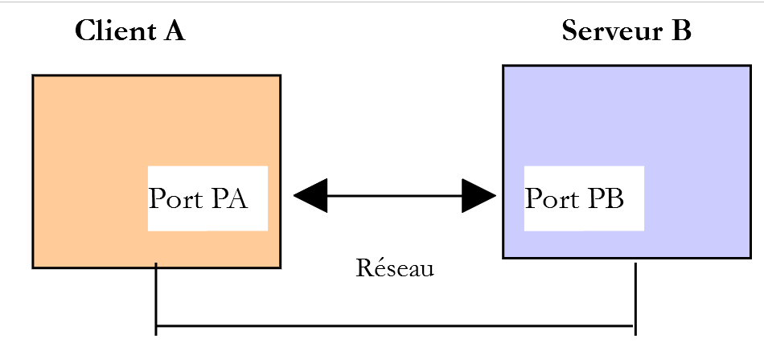
Neste capítulo:
- O [Serveur B] será um servidor SMTP local que iremos instalar;
- O [Client A] será um cliente SMTP de várias formas:
- o cliente [RawTcpClient] para descobrir o protocolo SMTP;
- um script PHP que simula o protocolo SMTP do cliente [RawTcpClient];
- um script PHP que utiliza a biblioteca [SwiftMailServer], permitindo enviar todo o tipo de e-mails;
16.5.2. Criação de um endereço [gmail]
Para realizar os nossos testes SMTP, precisaremos de um endereço de e-mail para onde enviar mensagens. Para tal, vamos criar um endereço no Gmail:

- em [5], criamos o utilizador [php7parlexemple] (escolha outro nome);
- em [6], a palavra-passe será [PHP7parlexemple] (escolha outra);
- em [7], validamos estas informações;

- preencha os campos [9-10] e, em seguida, confirme (11);
- aceite os termos de utilização do Google (12-13) e, em seguida, confirme (14);

- em [15], a caixa de entrada (Inbox) do utilizador [PHP7] (16);
- em [17], este utilizador tem uma caixa de entrada vazia;
- em [18-19], inicie sessão na conta Google do utilizador [php7parlexemple@gmail.com]. Vamos configurar a segurança da conta;

- em [21], autorize outras aplicações, além das do Google, a aceder à conta [php7parlexemple]. Se não o fizermos, o nosso servidor de e-mail local [hMailServer] não poderá comunicar com o servidor SMTP do Gmail;

16.5.3. Instalação de um servidor SMTP
Para os nossos testes, iremos instalar o servidor de e-mail [hMailServer], que é simultaneamente um servidor SMTP que permite enviar e-mails, um servidor POP3 (Post Office Protocol), que permite ler os e-mails armazenados no servidor, e um servidor IMAP (Internet Message Access Protocol), que também permite ler os e-mails armazenados no servidor, mas vai além disso. Permite, nomeadamente, gerir o armazenamento dos e-mails no servidor.
O servidor de e-mail [hMailServer] está disponível no URL [https://www.hmailserver.com/] (maio de 2019).

Durante a instalação, serão solicitadas algumas informações:
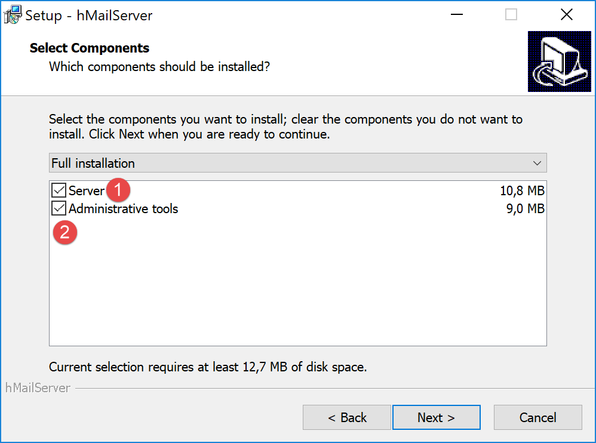
- no [1-2], selecione tanto o servidor de e-mail como as ferramentas para o administrar;
- durante a instalação, ser-lhe-á solicitada a palavra-passe do administrador: anote-a, pois será necessária;
O [hMailServer] instala-se como um serviço do Windows iniciado automaticamente ao arrancar o computador. É preferível optar por um arranque manual:
- no [3], digite [services] na área de entrada da barra de estado;

- em [4-8], coloque o serviço no modo [manuel] (6) e inicie-o (7);
Depois de iniciado, o servidor [hMailServer] deve ser configurado. O servidor foi instalado com um programa de administração [hMailServer Administrator]:

- no [2], na área de introdução de dados da barra de estado, digite [hmailserver];
- em [3], inicie o administrador;
- em [4], ligue o administrador ao servidor [hMailServer];
- em [5], introduza a palavra-passe definida durante a instalação de [hMailServer];

Vamos criar uma conta de utilizador:
- clique com o botão direito do rato em [Accounts] (7) e, em seguida, em (8) para adicionar um novo utilizador;
- no separador [General] (9), definimos um utilizador [guest] (10) com a palavra-passe [guest] (11). Este terá o endereço de e-mail [guest@localhost] (10);
- em [12], o utilizador [guest] está ativado;


- em [15], configura-se o protocolo SMTP do servidor de e-mail;
- no [16], configura-se a distribuição dos e-mails;
- em [17], a configuração da distribuição de e-mails com destino ao computador anfitrião (localhost);
- em [18], o nome da máquina local (localhost). O script do parágrafo «ligação» permite-lhe obter esse nome;
- no [19], configura-se um servidor de retransmissão SMTP: trata-se do servidor que se encarregará da distribuição dos e-mails não destinados à máquina local (localhost);
- em [20], o servidor SMTP do Gmail. Escolhemos o Gmail porque criámos uma conta nesse serviço no parágrafo «ligação»;
- em [21], a porta SMTP do Gmail;
- No [22], o serviço SMTP do Gmail é um serviço seguro: é necessário ter uma conta Gmail para aceder ao mesmo;
- em [23], o utilizador [php7parlexemple] criado no parágrafo «ligação»;
- em [24], a palavra-passe deste utilizador: [PHP7parlexemple], criado no parágrafo «ligação»;
- em [25], indica-se o tipo de protocolo de segurança utilizado pelo Gmail;

- em [27], a porta do serviço SMTP;
- em [28], este serviço não requer autenticação;
- em [30], insira a mensagem de boas-vindas que o servidor SMTP enviará aos seus clientes;
16.5.4. O protocolo SMTP
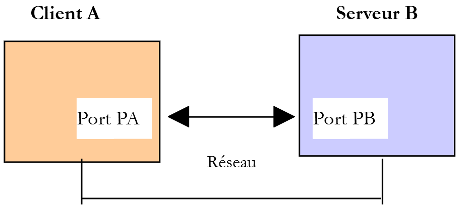
Vamos explorar o protocolo SMTP com o seguinte ambiente:
- o cliente A será o cliente genérico TCP, [RawTcpClient];
- o servidor B será o servidor de e-mail [hMailServer];
- o cliente A solicitará ao servidor B que entregue um e-mail ao utilizador [php7parlexemple@gmail.com];
- vamos verificar se esse utilizador recebeu efetivamente o e-mail enviado;
Iniciamos o cliente da seguinte forma:

- em [1], ligamo-nos à porta 25 da máquina local, onde funciona o serviço SMTP de [hMailServer]. O argumento [--quit bye] indica que o utilizador sairá do programa ao digitar o comando [bye]. Sem este argumento, o comando para encerrar o programa é [quit]. No entanto, [quit] é também um comando do protocolo SMTP. Por isso, temos de evitar esta ambiguidade;
- em [2], o cliente está efetivamente ligado;
- em [3], o cliente aguarda comandos introduzidos pelo teclado;
- em [4], o servidor envia-lhe a sua mensagem de boas-vindas;

- em [5], o cliente envia o comando [EHLO nom-de-la-machine-client]. O servidor responde-lhe com uma sequência de mensagens do tipo [250-xx] (6). O código [250] indica que o comando enviado pelo cliente foi bem-sucedido;
- em [7], o cliente indica o remetente da mensagem, neste caso [guest@localhost]. Este utilizador deve existir no servidor de e-mail [hMailServer]. É o que acontece neste caso, pois criámos este utilizador anteriormente;
- em [8], a resposta do servidor;
- em [9], indica-se o destinatário da mensagem, neste caso o utilizador do Gmail [php7parlexemple@gmail.com];
- em [10], a resposta do servidor;
- em [11], o comando [DATA] indica ao servidor que o cliente vai enviar o conteúdo da mensagem;
- em [12], a resposta do servidor;
- no formato [13-16], o cliente deve enviar uma lista de linhas de texto terminada por uma linha que contenha apenas um ponto. A mensagem pode conter linhas [Subject :, From :, To :] (13) para definir, respetivamente, o assunto da mensagem, o remetente e o destinatário;
- em [14], os cabeçalhos anteriores devem ser seguidos de uma linha em branco;
- em [15], o texto da mensagem;
- em [16], a linha que contém apenas um ponto, indicando o fim da mensagem;
- em [17], assim que o servidor receber a linha que contém apenas um ponto, coloca a mensagem na fila;
- em [18], o cliente indica ao servidor que terminou;
- em [19], a resposta do servidor;
- em [20], verifica-se que o servidor encerrou a ligação que o ligava ao cliente;
Agora, vamos verificar se o utilizador [php7parlexemple@gmail.com] recebeu efetivamente a mensagem:

- em [2], verifica-se que o utilizador [php7parlexemple@gmail.com] recebeu efetivamente a mensagem;


- em [7], o remetente do e-mail. Vê-se que não é [guest@localhost]. Isto deve-se ao facto de ter sido o servidor de retransmissão definido na configuração de [hmailServer] que entregou a mensagem. Ora, esse servidor de retransmissão é o [smtp.gmail.com], associado às credenciais do utilizador do Gmail [php7parlexemple@gmail.com]. Qualquer e-mail proveniente de [hMailServer] parecerá ter sido enviado pelo utilizador [php7parlexemple@gmail.com]. Não era isso que pretendíamos, mas se não utilizarmos este servidor de retransmissão, o serviço SMTP do Gmail rejeita os e-mails enviados por [hMailServer], porque o SMTP do Gmail exige uma autenticação que o [hMailServer] não envia. Deve haver, sem dúvida, uma forma de contornar este problema, mas não a encontrei;
- no [8], verifica-se que o e-mail foi recebido da máquina [DESKTOP-528I5CU], que aloja o servidor de e-mail [hMailServer];
- em [9], o remetente da mensagem. Vê-se que não é o [guest@localhost];
- em [10], o remetente original da mensagem. Desta vez, é mesmo o [guest@localhost];
- em [11], o assunto;
- em [12], o destinatário;
- em [13], a mensagem;
Por fim, o nosso cliente [RawTcpClient] conseguiu enviar a mensagem, apesar de termos encontrado um problema com o remetente. Temos agora as bases para criar um cliente SMTP escrito em PHP.
16.5.5. Um cliente SMTP básico escrito em PHP
Vamos reproduzir em PHP o que aprendemos anteriormente sobre o protocolo SMTP.

O script [smtp-01.php] é configurado pelo seguinte ficheiro jSON [config-smtp-01.json]:
{
"mail to localhost via localhost": {
"smtp-server": "localhost",
"smtp-port": "25",
"from": "guest@localhost",
"to": "guest@localhost",
"subject": "to localhost via localhost",
"message": "ligne 1\nligne 2\nligne 3"
},
"mail to gmail via localhost": {
"smtp-server": "localhost",
"smtp-port": "25",
"from": "guest@localhost",
"to": "php7parlexemple@gmail.com",
"subject": "to gmail via localhost",
"message": "ligne 1\nligne 2\nligne 3"
},
"mail to gmail via gmail": {
"smtp-server": "smtp.gmail.com",
"smtp-port": "587",
"from": "guest@localhost",
"to": "php7parlexemple@gmail.com",
"subject": "to gmail via gmail",
"message": "ligne 1\nligne 2\nligne 3"
}
}
[config-smtp-01.json] é um array em que cada um dos elementos é um dicionário do tipo [nom=>infos]. O valor [infos] é, por sua vez, um dicionário com as seguintes chaves e valores:
- [smtp-server]: o nome do servidor SMTP a utilizar;
- [smtp-port]: o número da porta do serviço SMTP;
- [from]: o remetente da mensagem;
- [to]: o destinatário da mensagem;
- [subject]: o assunto da mensagem;
- [message]: a mensagem a enviar;
- O primeiro elemento utiliza o servidor SMTP [localhost] para enviar um e-mail a um utilizador de [localhost];
- o segundo elemento utiliza o servidor SMTP [localhost] para enviar um e-mail a um utilizador de [Gmail];
- o terceiro elemento utiliza o servidor SMTP [Gmail] para enviar um e-mail a um utilizador de [Gmail];
O código [smtp-01.php] do cliente SMTP é o seguinte:
<?php
// cliente SMTP (Protocolo de Transferência SendMail) que permite enviar uma mensagem
// protocolo de comunicação cliente-servidor SMTP
// -> o cliente liga-se à porta 25 do servidor SMTP
// <- o servidor envia-lhe uma mensagem de boas-vindas
// -> o cliente envia o comando EHLO com o nome do seu computador
// <- o servidor responde com OK ou não
// -> o cliente envia o comando MAIL FROM: <remetente>
// <- o servidor responde com OK ou não
// -> o cliente envia o comando RCPT TO: <destinatário>
// <- o servidor responde com OK ou não
// -> o cliente envia o comando DATA
// <- o servidor responde com OK ou não
// -> o cliente envia todas as linhas da sua mensagem e termina com uma linha que contém o
// único carácter.
// <- o servidor responde com OK ou não
// -> o cliente envia o comando QUIT
// <- o servidor responde com OK ou não
// as respostas do servidor têm o formato xxx texto, em que xxx é um número de 3 dígitos. Qualquer
// número xxx >=500 indica um erro.
// A resposta pode conter várias linhas, todas começando por xxx, exceto a última
// no formato xxx(espaço)
// as linhas de texto trocadas devem terminar com os caracteres RC(#13) e LF(#10)
//
// cliente SMTP (Protocolo de Transferência SendMail) que permite enviar uma mensagem
//
// gestão de erros
//ini_set("error_reporting", E_ALL & ~ E_WARNING & ~E_DEPRECATED & ~E_NOTICE);
//ini_set("display_errors", "off");
//
// respeito rigoroso dos tipos declarados dos parâmetros das funções
declare (strict_types=1);
//
// os parâmetros para o envio de e-mail
const CONFIG_FILE_NAME = "config-smtp-01.json";
// recuperação da configuração
$mails = \json_decode(\file_get_contents(CONFIG_FILE_NAME), true);
// envio de e-mails
foreach ($mails as $name => $infos) {
// acompanhamento
print "Envoi du mail [$name]\n";
// envio da correspondência
$résultat = sendmail($name, $infos, TRUE);
// visualização do resultado
print "$résultat\n";
}//para
// fim
exit;
//sendmail
//-----------------------------------------------------------------------
function sendmail(string $name, array $infos, bool $verbose = TRUE): string {
// envia a mensagem [$name,$infos]. Se $verbose=TRUE , é possível acompanhar as trocas entre cliente e servidor
// recupera-se o nome do cliente
$client = gethostbyaddr(gethostbyname(""));
// abertura de uma ligação com o servidor SMTP
$connexion = fsockopen($infos["smtp-server"], (int) $infos["smtp-port"]);
// retorno em caso de erro
if ($connexion === FALSE) {
return sprintf("Echec de la connexion au site (%s,%s) : %s", $infos["smtp-server"], $infos["smtp-port"]);
}
// $connexion representa um fluxo de comunicação bidirecional
// entre o cliente (este programa) e o servidor SMTP contactado
// este canal é utilizado para a troca de comandos e informações
// após a ligação, o servidor envia uma mensagem de boas-vindas que é lida
$erreur = sendCommand($connexion, "", $verbose, TRUE);
if ($erreur !== "") {
// encerramento da ligação
fclose($connexion);
// retorno
return $erreur;
}
// comando EHLO
$erreur = sendCommand($connexion, "EHLO $client", $verbose, TRUE);
if ($erreur !== "") {
// encerramento da ligação
fclose($connexion);
// retorno
return $erreur;
}
// comando MAIL FROM:
$erreur = sendCommand($connexion, sprintf("MAIL FROM: <%s>", $infos["from"]), $verbose, TRUE);
if ($erreur !== "") {
// encerramento da ligação
fclose($connexion);
// retorno
return $erreur;
}
// comando RCPT TO:
$erreur = sendCommand($connexion, sprintf("RCPT TO: <%s>", $infos["to"]), $verbose, TRUE);
if ($erreur !== "") {
// encerramento da ligação
fclose($connexion);
// retorno
return $erreur;
}
// comando DATA
$erreur = sendCommand($connexion, "DATA", $verbose, TRUE);
if ($erreur !== "") {
// encerramento da ligação
fclose($connexion);
// retorno
return $erreur;
}
// preparação da mensagem a enviar
// deve conter as seguintes linhas
// From: remetente
// Para: destinatário
// Assunto:
// linha em branco
// Mensagem
// .
$data = sprintf("From: %s\r\nTo: %s\r\nSubject: %s\r\n\r\n%s\r\n.\r\n", $infos["from"], $infos["to"], $infos["subject"], $infos["message"]);
$erreur = sendCommand($connexion, $data, $verbose, FALSE);
if ($erreur !== "") {
// encerramento da ligação
fclose($connexion);
// retorno
return $erreur;
}
// comando «quit»
$erreur = sendCommand($connexion, "QUIT", $verbose, TRUE);
if ($erreur !== "") {
// encerramento da ligação
fclose($connexion);
// retorno
return $erreur;
}
// fim
fclose($connexion);
return "Message envoyé";
}
// --------------------------------------------------------------------------
function sendCommand($connexion, string $commande, bool $verbose, bool $withRCLF): string {
// envia $commande para o canal $connexion
// modo detalhado se $verbose=1
// se $withRCLF=1, adiciona a sequência RCLF à troca
// dados
if ($withRCLF) {
$RCLF = "\r\n";
} else {
$RCLF = "";
}
// envio de comando se $commande não estiver vazio
if ($commande!=="") {
fputs($connexion, "$commande$RCLF");
// eventual resposta
if ($verbose) {
affiche($commande, 1);
}
}//se
// leitura da resposta
$réponse = fgets($connexion, 1000);
// eco eventual
if ($verbose) {
affiche($réponse, 2);
}
// recuperação do código de erro
$codeErreur = (int) substr($réponse, 0, 3);
// última linha da resposta?
while (substr($réponse, 3, 1) === "-") {
// leitura da resposta
$réponse = fgets($connexion, 1000);
// eco eventual
if ($verbose) {
affiche($réponse, 2);
}
}//enquanto
// resposta concluída
// erro devolvido pelo servidor?
if ($codeErreur >= 500) {
return substr($réponse, 4);
}
// retorno sem erro
return "";
}
// --------------------------------------------------------------------------
function affiche($échange, $sens) {
// exibe $échange no ecrã
// se $sens=1, exibe -->$echange
// se $sens=2, exibe <-- $échange sem os dois últimos caracteres RCLF
switch ($sens) {
case 1:
print "--> [$échange]\n";
break;
case 2:
$L = strlen($échange);
print "<-- [" . substr($échange, 0, $L - 2) . "]\n";
break;
}//comutador
}
Comentários
- linha 39: utiliza-se o ficheiro de configuração;
- linha 42: é feito um ciclo pelos elementos da tabela [mails]. Cada elemento é um dicionário [name=>infos], em que [name] é um nome que pode ser qualquer um e [infos] é um dicionário que contém as informações necessárias para o envio de um e-mail;
- linha 46: o envio do e-mail é assegurado pela função [sendmail], que aceita três parâmetros:
- $name: o nome atribuído a este envio;
- $infos: o dicionário que contém as informações necessárias para o envio;
- verbose: um valor booleano que indica se as trocas cliente/servidor devem ou não ser registadas na consola;
- linha 46: a função [sendmail] devolve uma mensagem de erro que fica vazia caso não tenha ocorrido qualquer erro;
- linha 56: a função [sendmail] envia os diferentes comandos que um cliente deve enviar SMTP:
- linhas 77-84: o comando EHLO;
- linhas 85-92: o comando MAIL FROM: ;
- linhas 93-100: a encomenda RCPT TO: ;
- linhas 101-108: o comando DATA;
- linhas 117-124: envio da mensagem (De, Para, Assunto, texto);
- linhas 125-132: o comando QUIT;
- linha 140: a função [sendCommand] é responsável por enviar os comandos do cliente para o servidor SMTP. Aceita quatro parâmetros:
- [$connexion]: a ligação que liga o cliente ao servidor;
- [$commande]: o comando a enviar;
- [$verbose]: se TRUE, então as trocas entre cliente e servidor são registadas na consola;
- [$withRCLF]: se TRUE, envia o comando terminado pela sequência \r\n. Isto é necessário para todos os comandos do protocolo SMTP, mas o [sendCommand] também serve para enviar a mensagem. Neste caso, não se adiciona a sequência \r\n;
- linhas 150-157: o comando é enviado ao servidor;
- linhas 158-163: leitura da primeira linha da resposta. Esta pode conter várias linhas. Cada linha tem o formato XXX-YYY, em que XXX é um código numérico, exceto a última linha da resposta, que tem o formato XXX YYY (ausência do caractere -);
- linhas 167-174: leitura de todas as linhas da resposta;
- linha 177: se o código numérico XXX for superior a 500, então o servidor devolveu um erro;
Resultados
A execução do script produz os seguintes resultados na consola:
Envoi du mail [mail to localhost via localhost]
<-- [220 Bienvenue sur sergetahe@localhost]
--> [EHLO DESKTOP-528I5CU.home]
<-- [250-DESKTOP-528I5CU]
<-- [250-SIZE 20480000]
<-- [250-AUTH LOGIN]
<-- [250 HELP]
--> [MAIL FROM: <guest@localhost>]
<-- [250 OK]
--> [RCPT TO: <guest@localhost>]
<-- [250 OK]
--> [DATA]
<-- [354 OK, send.]
--> [From: guest@localhost
To: guest@localhost
Subject: to localhost via localhost
ligne 1
ligne 2
ligne 3
.
]
<-- [250 Queued (0.016 seconds)]
--> [QUIT]
<-- [221 goodbye]
Message envoyé
Envoi du mail [mail to gmail via localhost]
<-- [220 Bienvenue sur sergetahe@localhost]
--> [EHLO DESKTOP-528I5CU.home]
<-- [250-DESKTOP-528I5CU]
<-- [250-SIZE 20480000]
<-- [250-AUTH LOGIN]
<-- [250 HELP]
--> [MAIL FROM: <guest@localhost>]
<-- [250 OK]
--> [RCPT TO: <php7parlexemple@gmail.com>]
<-- [250 OK]
--> [DATA]
<-- [354 OK, send.]
--> [From: guest@localhost
To: php7parlexemple@gmail.com
Subject: to gmail via localhost
ligne 1
ligne 2
ligne 3
.
]
<-- [250 Queued (0.000 seconds)]
--> [QUIT]
<-- [221 goodbye]
Message envoyé
Envoi du mail [mail to gmail via gmail]
<-- [220 smtp.gmail.com ESMTP d9sm21623375wro.26 - gsmtp]
--> [EHLO DESKTOP-528I5CU.home]
<-- [250-smtp.gmail.com at your service, [90.93.230.110]]
<-- [250-SIZE 35882577]
<-- [250-8BITMIME]
<-- [250-STARTTLS]
<-- [250-ENHANCEDSTATUSCODES]
<-- [250-PIPELINING]
<-- [250-CHUNKING]
<-- [250 SMTPUTF8]
--> [MAIL FROM: <guest@localhost>]
<-- [530 5.7.0 Must issue a STARTTLS command first. d9sm21623375wro.26 - gsmtp]
5.7.0 Must issue a STARTTLS command first. d9sm21623375wro.26 - gsmtp
Done.
- linhas 1-26: a utilização do servidor SMTP [hMailServer] para enviar um e-mail para [guest@localhost] decorre sem problemas;
- linhas 27-52: a utilização dos servidores SMTP e [hMailServer] para enviar um e-mail para [php7parlexemple@gmail.com] decorre sem problemas;
- linhas 53-65: a utilização do servidor SMTP [Gmail] para enviar um e-mail para [php7parlexemple@gmail.com] não está a correr bem: na linha 65, o servidor SMTP envia um código de erro 530 com a mensagem de erro. Esta indica que o cliente SMTP deve, previamente, autenticar-se através de uma ligação segura. O nosso cliente não o fez e, por isso, a ligação é recusada;
16.5.6. Um segundo cliente, SMTP, escreve utilizando a biblioteca [SwiftMailer]
O cliente anterior apresenta, pelo menos, duas falhas:
- não sabe utilizar uma ligação segura caso o servidor a exija;
- não sabe anexar ficheiros à mensagem;
No nosso novo script, vamos utilizar a biblioteca [SwiftMailer] [https://swiftmailer.symfony.com/] (maio de 2019). O procedimento de instalação do [SwiftMailer] está descrito no URL [https://swiftmailer.symfony.com/docs/introduction.HTML] (maio de 2019).
Em primeiro lugar, inicie o Laragon:

- no [1], abra um terminal;

- em [3], verifique se está na pasta [<laragon>/www], em que <laragon> é a pasta de instalação do Laragon;
- em [3], introduza o comando indicado (maio de 2019). Verifique em URL e [https://swiftmailer.symfony.com/docs/introduction.HTML] o comando exato;
- no [4], é indicado que não foi realizada nenhuma instalação nem atualização. Isto deve-se ao facto de a biblioteca já ter sido instalada neste computador;
- em [5], a pasta de instalação de [swiftmailer] [6];
- no [7], um ficheiro de que vamos precisar no nosso script;
Feito isto, verifique se a pasta [<laragon>/www/vendor] [5] se encontra efetivamente no ramo [Include Path] do NetBeans (ver parágrafo com o link).
Por fim, a biblioteca [SwiftMailer] requer que a extensão PHP [mbstring] esteja ativa. Para tal, verifique o ficheiro [php.ini] (ver parágrafo com o link):
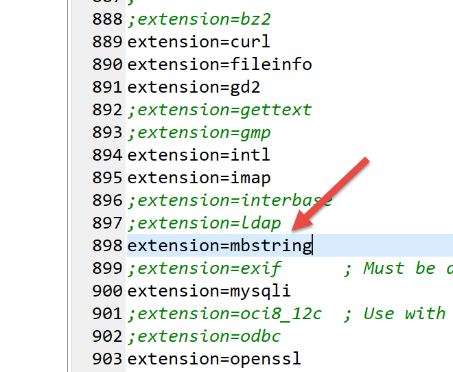
O script [smtp-02.php] utilizará o seguinte ficheiro de configuração jSON [config-smtp-02.json]:
Encontram-se os mesmos campos que no ficheiro [config-smtp-01.json], com dois campos adicionais:
- [tls]: em TRUE, indica que é necessário utilizar uma ligação segura com o servidor SMTP. Caso o [tls] seja igual ao TRUE, é necessário adicionar dois campos:
- [user]: o nome do utilizador que autentica a ligação;
- [password]: a sua palavra-passe;
No nosso exemplo, utilizámos as credenciais do utilizador [php7parlexemple@gmail.com] para nos ligarmos ao servidor do Gmail. Utilize as suas;
- [attachments]: indica os nomes dos ficheiros a anexar ao e-mail;
O código do script [smtp-02.php] é o seguinte:
<?php
// cliente SMTP (Protocolo de Transferência SendMail) que permite enviar uma mensagem
//
// gestão de erros
//ini_set("error_reporting", E_ALL & ~ E_WARNING & ~E_DEPRECATED & ~E_NOTICE);
//ini_set("display_errors", "off");
//
// dependências
require_once 'C:/myprograms/laragon-lite/www/vendor/autoload.php';
//
// parâmetros de envio de e-mail
const CONFIG_FILE_NAME = "config-smtp-02.json";
// recuperar a configuração
$mails = \json_decode(\file_get_contents(CONFIG_FILE_NAME), true);
// envio de e-mails
foreach ($mails as $name => $infos) {
// acompanhamento
print "Envoi du mail [$name]\n";
// envio de e-mails
$résultat = sendmail($name, $infos);
// exibição do resultado
print "$résultat\n";
}//para
// fim
exit;
//-----------------------------------------------------------------------
function sendmail($name, $infos) {
// envia $infos[message] para o servidor SMTP $infos[smtp-server] na porta $infos[smt-port]
// se $infos[tls] for verdadeiro, será utilizado o suporte TLS
// o e-mail é enviado em nome de $infos[from]
// para o destinatário $infos['to']
// O documento $info[attachment] está anexado à mensagem
// a mensagem tem como assunto $infos[subject]
//
// mensagem no formato HTML
$messageHTML = str_replace("\n", "<br/>", $infos["message"]);
try {
// criação da mensagem
$message = (new \Swift_Message())
// assunto da mensagem
->setSubject($infos["subject"])
// remetente
->setFrom($infos["from"])
// destinatários com um dicionário (setTo/setCc/setBcc)
->setTo($infos["to"])
// texto da mensagem
->setBody($infos["message"])
// variante HTML
->addPart("<b>$messageHTML</b>", 'text/html')
;
// anexos
foreach ($infos["attachments"] as $attachment) {
// caminho do anexo
$fileName = __DIR__ . $attachment;
// verifica-se se o ficheiro existe
if (file_exists($fileName)) {
// anexamos o documento à mensagem
$message->attach(\Swift_Attachment::fromPath($fileName));
} else {
// erro
print "L'attachement [$fileName] n'existe pas\n";
}
}
// protocolo TLS?
if ($infos["tls"] === "TRUE") {
// TLS
$transport = (new \Swift_SmtpTransport($infos["smtp-server"], $infos["smtp-port"], 'tls'))
->setUsername($infos["user"])
->setPassword($infos["password"]);
} else {
// sem TLS
$transport = (new \Swift_SmtpTransport($infos["smtp-server"], $infos["smtp-port"]));
}
// o gestor do envio
$mailer = new \Swift_Mailer($transport);
// envio da mensagem
$result = $mailer->send($message);
// fim
return "Message [$name] envoyé";
} catch (\Throwable $ex) {
// erro
return "Erreur lors de l'envoi du message [$name] : " . $ex->getMessage();
}
}
Comentários
- linha 10: carregamos o ficheiro [autoload.php], que se encontra na pasta [<lagagon>/www/vendor], em que <laragon> é a pasta de instalação do Laragon. Este ficheiro permitirá carregar os ficheiros de definição das classes de [SwiftMailer] logo na primeira utilização dessas classes. Evita-nos ter de criar tantos ficheiros [require] quantas as classes e interfaces de SwiftMailer que iremos utilizar;
- linha 32: a nova função [sendmail], que tem dois parâmetros:
- [$name], que serve para diferenciar as mensagens umas das outras;
- [$infos]: as informações necessárias para enviar a mensagem ao seu destinatário;
- linha 42: teremos duas versões da mensagem: uma em texto simples e outra em HTML. Aqui, alteramos os caracteres de fim de linha para o código HTML <br/>;
- linhas 45-69: definimos a mensagem utilizando a classe [\SwiftMessage];
- linha 47: o método [SwiftMessage→setSubject] serve para definir o assunto da mensagem;
- linha 49: o método [SwiftMessage→setFrom] serve para definir o remetente da mensagem;
- linha 51: o método [SwiftMessage→setTo] serve para definir o destinatário da mensagem;
- linha 53: o método [SwiftMessage→setBody] serve para definir o corpo da mensagem;
- linha 55: o método [SwiftMessage→addPart] serve para definir diferentes versões da mensagem, neste caso a mensagem no formato HTML. Quando a mensagem tem variantes, os programas de e-mail apresentam a variante preferida do utilizador;
- linhas 58-69: o método [SwiftMessage→addAttachment] (64) permite anexar um ficheiro à mensagem;
- linhas 70-79: uma vez definida a mensagem a enviar, é necessário definir como enviá-la. O modo de transporte da mensagem é definido pela classe [\Swift_SmtpTransport]. Há, pelo menos, duas informações a fornecer: o nom e o port do servidor SMTP. Há ainda uma terceira informação: o servidor SMTP exige autenticação segura?
- linhas 73-75: a instância [\Swift_SmtpTransport] para uma ligação segura ao servidor SMTP;
- linha 78: a instância [\Swift_SmtpTransport] para uma ligação não segura ao servidor SMTP;
- linha 81: é a classe [\SwiftMailer] que envia as mensagens. Deve ser-lhe passado o modo de transporte escolhido;
- linha 83: a mensagem [\SwiftMessage] é enviada através do transporte [\Swift_SmtpTransport] selecionado. O método [SwiftMailer→send] retorna o valor booleano FALSE caso a mensagem não tenha podido ser enviada;
- linhas 86-89: a biblioteca [SwiftMailer] lança uma exceção assim que algo corre mal;
Nota: note-se que o espaço de nomes das classes da biblioteca [SwiftMailer] é a raiz \. As classes [\SwiftMessage, \Swift_SmtpTransport, \SwiftMailer] foram explicitamente indicadas para o recordar;
Resultados
Ao executar o script [smtp-02.php], obtêm-se os seguintes resultados na consola:
Se consultarmos a conta Gmail do utilizador [php7parlexemple], obtemos o seguinte:

- em [1], o assunto;
- em [2], o remetente;
- em [3], o destinatário;
- em [4], a mensagem;
- em [5-10], os anexos;
Se solicitarmos a visualização da mensagem original, obtemos o seguinte documento:
Return-Path: <php7parlexemple@gmail.com>
Received: from [127.0.0.1] (lfbn-1-11924-110.w90-93.abo.wanadoo.fr. [90.93.230.110])
by smtp.gmail.com with ESMTPSA id e14sm7773816wma.41.2019.05.26.03.11.53
for <php7parlexemple@gmail.com>
(version=TLS1_2 cipher=ECDHE-RSA-AES128-GCM-SHA256 bits=128/128);
Sun, 26 May 2019 03:11:54 -0700 (PDT)
Message-ID: <e613c47a421a66e2cf7f8e319616ec49@swift.generated>
Date: Sun, 26 May 2019 10:11:53 +0000
Subject: test-gmail-via-gmail
From: php7parlexemple@gmail.com
To: php7parlexemple@gmail.com
MIME-Version: 1.0
Content-Type: multipart/mixed; boundary="_=_swift_1558865513_a3a939017128a4cfb867e968bce5df49_=_"
--_=_swift_1558865513_a3a939017128a4cfb867e968bce5df49_=_
Content-Type: multipart/alternative; boundary="_=_swift_1558865513_43c6d2a54065e4917fb06e3327f8d927_=_"
--_=_swift_1558865513_43c6d2a54065e4917fb06e3327f8d927_=_
Content-Type: text/plain; charset=utf-8
Content-Transfer-Encoding: quoted-printable
ligne 1
ligne 2
ligne 3
--_=_swift_1558865513_43c6d2a54065e4917fb06e3327f8d927_=_
Content-Type: text/HTML; charset=utf-8
Content-Transfer-Encoding: quoted-printable
<b>ligne 1<br/>ligne 2<br/>ligne 3</b>
--_=_swift_1558865513_43c6d2a54065e4917fb06e3327f8d927_=_--
--_=_swift_1558865513_a3a939017128a4cfb867e968bce5df49_=_
Content-Type: application/vnd.openxmlformats-officedocument.wordprocessingml.document; name="Hello from SwiftMailer.docx"
Content-Transfer-Encoding: base64
Content-Disposition: attachment; filename="Hello from SwiftMailer.docx"
--_=_swift_1558865513_a3a939017128a4cfb867e968bce5df49_=_
Content-Type: application/pdf; name="Hello from SwiftMailer.pdf"
Content-Transfer-Encoding: base64
Content-Disposition: attachment; filename="Hello from SwiftMailer.pdf"
--_=_swift_1558865513_a3a939017128a4cfb867e968bce5df49_=_
Content-Type: application/vnd.oasis.opendocument.text; name="Hello from SwiftMailer.odt"
Content-Transfer-Encoding: base64
Content-Disposition: attachment; filename="Hello from SwiftMailer.odt"
--_=_swift_1558865513_a3a939017128a4cfb867e968bce5df49_=_
Content-Type: image/png; name="Cours-Tutoriels-Serge-Tahé-1568x268.png"
Content-Transfer-Encoding: base64
Content-Disposition: attachment; filename="Cours-Tutoriels-Serge-Tahé-1568x268.png"
--_=_swift_1558865513_a3a939017128a4cfb867e968bce5df49_=_
Content-Type: message/rfc822; name=test-localhost.eml
Content-Transfer-Encoding: base64
Content-Disposition: attachment; filename=test-localhost.eml
Return-Path: guest@localhost
Received: from [127.0.0.1] (localhost [127.0.0.1]) by DESKTOP-528I5CU with ESMTP ; Sat, 25 May 2019 09:48:23 +0200
Message-ID: <620f4628882b011feebe4faa30b45092@swift.generated>
Date: Sat, 25 May 2019 07:48:22 +0000
Subject: test-localhost
From: guest@localhost
To: guest@localhost
MIME-Version: 1.0
Content-Type: multipart/mixed; boundary="_=_swift_1558770502_c4b808c99c27ded04595bd11f4bad11b_=_"
--_=_swift_1558770502_c4b808c99c27ded04595bd11f4bad11b_=_
Content-Type: multipart/alternative; boundary="_=_swift_1558770503_3561ca315f33bd15ef6556e98db4a5b8_=_"
--_=_swift_1558770503_3561ca315f33bd15ef6556e98db4a5b8_=_
Content-Type: text/plain; charset=utf-8
Content-Transfer-Encoding: quoted-printable
j'ai =C3=A9t=C3=A9 invit=C3=A9 =C3=A0 d=C3=A9je=C3=BBner
--_=_swift_1558770503_3561ca315f33bd15ef6556e98db4a5b8_=_
Content-Type: text/HTML; charset=utf-8
Content-Transfer-Encoding: quoted-printable
<b>j'ai =C3=A9t=C3=A9 invit=C3=A9 =C3=A0 d=C3=A9je=C3=BBner</b>
--_=_swift_1558770503_3561ca315f33bd15ef6556e98db4a5b8_=_--
--_=_swift_1558770502_c4b808c99c27ded04595bd11f4bad11b_=_
Content-Type: application/vnd.openxmlformats-officedocument.wordprocessingml.document; name="Hello from SwiftMailer.docx"
Content-Transfer-Encoding: base64
Content-Disposition: attachment; filename="Hello from SwiftMailer.docx"
--_=_swift_1558770502_c4b808c99c27ded04595bd11f4bad11b_=_
Content-Type: application/pdf; name="Hello from SwiftMailer.pdf"
Content-Transfer-Encoding: base64
Content-Disposition: attachment; filename="Hello from SwiftMailer.pdf"
--_=_swift_1558770502_c4b808c99c27ded04595bd11f4bad11b_=_
Content-Type: application/vnd.oasis.opendocument.text; name="Hello from SwiftMailer.odt"
Content-Transfer-Encoding: base64
Content-Disposition: attachment; filename="Hello from SwiftMailer.odt"
--_=_swift_1558770502_c4b808c99c27ded04595bd11f4bad11b_=_
Content-Type: image/png; name="Cours-Tutoriels-Serge-Tahé-1568x268.png"
Content-Transfer-Encoding: base64
Content-Disposition: attachment; filename="Cours-Tutoriels-Serge-Tahé-1568x268.png"
--_=_swift_1558770502_c4b808c99c27ded04595bd11f4bad11b_=_--
--_=_swift_1558865513_a3a939017128a4cfb867e968bce5df49_=_--
- linha 9: o assunto;
- linha 10: o remetente;
- linha 11: o destinatário;
- linha 13: a mensagem contém várias partes delimitadas pelas balizas [--_=_swift_xx];
- linhas 19-24: a mensagem em texto simples;
- linhas 27-30: a mensagem em HTML;
- linhas 34-36: o ficheiro anexo [Hello from SwiftMailer.docx];
- linhas 40-42: o ficheiro anexo [Hello from SwiftMailer.pdf];
- linhas 46-48: o ficheiro anexo [Hello from SwiftMailer.odt];
- linhas 58-60: o ficheiro anexo [Cours-Tutoriels-Serge-Tahé-1568x268.png];
- linhas 58-60: o ficheiro anexo [test-localhost.eml];
- linhas 62-114: o ficheiro anexo [test-localhost.eml] é, por sua vez, uma mensagem cujo conteúdo é apresentado nas linhas 62-114. É possível verificar que esta mensagem contém, por sua vez, anexos;
16.6. Os protocolos POP3 (Post Office Protocol) e IMAP (Internet Message Access Protocol)
16.6.1. Introdução
Para ler os e-mails armazenados num servidor de e-mail, existem dois protocolos:
- o protocolo POP3 (Post Office Protocol), historicamente o primeiro protocolo, mas pouco utilizado atualmente;
- o protocolo IMAP (Internet Message Access Protocol), um protocolo mais recente do que o POP3 e o mais utilizado atualmente;
Para explorar o protocolo POP3, vamos utilizar a seguinte arquitetura:
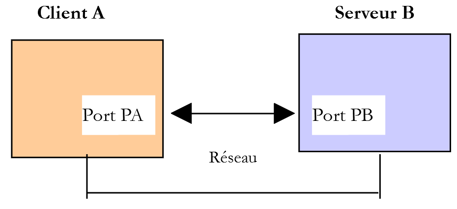
- O [Serveur B] será um servidor POP3 / IMAP local, implementado pelo servidor de e-mail [hMailServer];
- [Client A] será um cliente POP3 / IMAP de várias formas:
- o cliente [RawTcpClient] para descobrir o protocolo POP3;
- um script PHP que reproduz o protocolo POP3 do cliente [RawTcpClient];
- um script PHP que utiliza a biblioteca IMAP de PHP, a qual permite implementar tanto clientes IMAP como POP3;
16.6.2. Descoberta do protocolo POP3
Em primeiro lugar, utilizamos o script [smtp-01.php] para enviar um e-mail ao utilizador [guest@localhost]. Se tiver realizado os testes associados ao script, este utilizador deverá ter recebido e-mails, mas não foi possível verificar isso. Para lhe enviar um novo e-mail, utilize, por exemplo, o seguinte ficheiro de configuração [config-smtp-01.json]:
Agora, vamos ver com o cliente [RawTcpClient] como se pode aceder à caixa de correio do utilizador [guest@localhost]:
C:\Data\st-2019\dev\php7\php5-exemples\exemples\inet\utilitaires>RawTcpClient --quit bye localhost 110
Client [DESKTOP-528I5CU:55593] connecté au serveur [localhost-110]
Tapez vos commandes (bye pour arrêter) :
<-- [+OK Bienvenue sur sergetahe@localhost]
USER guest@localhost
<-- [+OK Send your password]
PASS guest
<-- [+OK Mailbox locked and ready]
LIST
<-- [+OK 2 messages (610 octets)]
<-- [1 305]
<-- [2 305]
<-- [.]
RETR 1
<-- [+OK 305 octets]
<-- [Return-Path: guest@localhost]
<-- [Received: from DESKTOP-528I5CU.home (localhost [127.0.0.1])]
<-- [ by DESKTOP-528I5CU with ESMTP]
<-- [ ; Tue, 21 May 2019 12:59:11 +0200]
<-- [Message-ID: <1356373A-33C9-4F31-BA43-2B119E128CE3@DESKTOP-528I5CU>]
<-- [From: guest@localhost]
<-- [To: guest@localhost]
<-- [Subject: to localhost via localhost]
<-- []
<-- [ligne 1]
<-- [ligne 2]
<-- [ligne 3]
<-- [.]
DELE 1
<-- [+OK msg deleted]
LIST
<-- [+OK 1 messages (305 octets)]
<-- [2 305]
<-- [.]
DELE 2
<-- [+OK msg deleted]
LIST
<-- [+OK 0 messages (0 octets)]
<-- [.]
QUIT
<-- [+OK POP3 server saying goodbye…]
Perte de la connexion avec le serveur…
- linha 1: o servidor POP3 funciona normalmente com a porta 110. É o que acontece neste caso;
- linha 5: o comando [USER] serve para definir o utilizador cuja caixa de correio se pretende ler;
- linha 7: o comando [PASS] serve para definir a sua palavra-passe;
- linha 9: o comando [LIST] solicita a lista de mensagens presentes na caixa de correio do utilizador;
- linha 14: o comando [RETR] permite visualizar a mensagem cujo número é indicado;
- linha 29: o comando [DELE] solicita a eliminação da mensagem cujo número é indicado;
- linha 40: o comando [QUIT] indica ao servidor que o processo está concluído;
A resposta do servidor pode assumir várias formas:
- uma única linha que começa por [+OK] para indicar que o comando anterior do cliente foi bem-sucedido;
- uma única linha que começa por [-ERR] para indicar que o comando anterior do cliente falhou;
- várias linhas em que:
- a primeira linha começa por [+OK];
- a última linha é constituída por um único ponto;
16.6.3. Um script básico que implementa o protocolo POP3

Como o protocolo POP3 tem a mesma estrutura que o protocolo SMTP, o script [pop3-01.php] é uma adaptação do script [smtp-01.php]. Terá o seguinte ficheiro de configuração [config-pop3-01.json]:
- linhas 3-4: o servidor POP3 consultado é o servidor local [hMailServer];
- linhas 5-6: pretende-se ler a caixa de correio do utilizador [guest@localhost];
- linha 7: serão lidos, no máximo, 5 e-mails;
O script [pop3-01.php] é o seguinte:
<?php
// cliente POP3 (Post Office Protocol) que permite ler mensagens de uma caixa de correio
// protocolo de co POP3 cliente-servidor
// -> o cliente liga-se à porta 110 do servidor SMTP
// <- o servidor envia-lhe uma mensagem de boas-vindas
// -> o cliente envia o comando USER utilizador
// <- o servidor responde com OK ou não
// -> o cliente envia o comando PASS mot_de_passe
// <- o servidor responde com OK ou não
// -> o cliente envia o comando LIST
// <- o servidor responde com OK ou não
// -> o cliente envia o comando RETR, com um número diferente para cada e-mail
// <- o servidor responde com OK ou não. Se for OK, envia o conteúdo do e-mail solicitado
// -> o servidor envia todas as linhas do e-mail e termina com uma linha contendo o
// único carácter.
// -> o cliente envia o comando DELE seguido do número para eliminar um e-mail
// <- o servidor responde com OK ou não
// // -> o cliente envia o comando QUIT para encerrar a comunicação com o servidor
// <- o servidor responde com OK ou não
// as respostas do servidor têm o formato +OK texto ou -ERR texto
// A resposta pode conter várias linhas. Nesse caso, a última linha é constituída por um único ponto
// as linhas de texto trocadas devem terminar com os caracteres RC(#13) e LF(#10)
//
// Cliente POP3 (Protocolo de Transferência SendMail) que permite ler e-mails
//
// gestão de erros
//ini_set("error_reporting", E_ALL & ~ E_WARNING & ~E_DEPRECATED & ~E_NOTICE);
//ini_set("display_errors", "off");
//
// respeito rigoroso dos tipos declarados dos parâmetros das funções
declare (strict_types=1);
//
// os parâmetros para o envio de e-mail
const CONFIG_FILE_NAME = "config-pop3-01.json";
// recuperação da configuração
$mailboxes = \json_decode(\file_get_contents(CONFIG_FILE_NAME), true);
// leitura das caixas de correio
foreach ($mailboxes as $name => $infos) {
// acompanhamento
print "Lecture de la boîte à lettres [$name]\n";
// leitura da caixa de correio
$résultat = readmail($name, $infos, TRUE);
// exibição do resultado
print "$résultat\n";
}//para
// fim
exit;
//ler e-mail
//-----------------------------------------------------------------------
function readmail(string $name, array $infos, bool $verbose = TRUE): string {
// lê o conteúdo da caixa de correio [$name]
// importa todas as mensagens
// cada mensagem é eliminada após a sua leitura
// Se $verbose=1, monitoriza as trocas entre cliente e servidor
//
// abertura de uma ligação com o servidor SMTP
$connexion = fsockopen($infos["server"], (int) $infos["port"]);
// retorno em caso de erro
if ($connexion === FALSE) {
return sprintf("Echec de la connexion au site (%s,%s) : %s", $infos["smtp-server"], $infos["smtp-port"]);
}
// $connexion representa um fluxo de comunicação bidirecional
// entre o cliente (este programa) e o servidor POP3 contactado
// este canal é utilizado para a troca de comandos e informações
// após a ligação, o servidor envia uma mensagem de boas-vindas que é lida
$erreur = sendCommand($connexion, "", $verbose, TRUE);
if ($erreur !== "") {
// encerramento da ligação
fclose($connexion);
// retorno
return $erreur;
}
// comando USER
$erreur = sendCommand($connexion, "USER {$infos["user"]}", $verbose, TRUE);
if ($erreur !== "") {
// encerramento da ligação
fclose($connexion);
// retorno
return $erreur;
}
// comando PASS
$erreur = sendCommand($connexion, "PASS {$infos["password"]}", $verbose, TRUE);
if ($erreur !== "") {
// encerramento da ligação
fclose($connexion);
// retorno
return $erreur;
}
// comando LIST
$premièreLigne = "";
$erreur = sendCommand($connexion, "LIST", $verbose, TRUE, $premièreLigne);
if ($erreur !== "") {
// encerramento da ligação
fclose($connexion);
// retorno
return $erreur;
}
// análise da primeira linha para determinar o número de mensagens
$champs = [];
preg_match("/^\+OK (\d+)/", $premièreLigne, $champs);
$nbMessages = (int) $champs[1];
// iteração pelas mensagens
$iMessage = 0;
while ($iMessage < $nbMessages && $iMessage < $infos["maxmails"]) {
// comando RETR
$erreur = sendCommand($connexion, "RETR " . ($iMessage + 1), $verbose, TRUE);
if ($erreur !== "") {
// encerramento da ligação
fclose($connexion);
// retorno
return $erreur;
}
// comando DELE
$erreur = sendCommand($connexion, "DELE " . ($iMessage + 1), $verbose, TRUE);
if ($erreur !== "") {
// encerramento da ligação
fclose($connexion);
// retorno
return $erreur;
}
// mensagem seguinte
$iMessage++;
}
// comando QUIT
$erreur = sendCommand($connexion, "QUIT", $verbose, TRUE);
if ($erreur !== "") {
// encerramento da ligação
fclose($connexion);
// voltar
return $erreur;
}
// fim
fclose($connexion);
return "Terminé";
}
// --------------------------------------------------------------------------
function sendCommand($connexion, string $commande, bool $verbose, bool $withRCLF, string &$premièreLigne = ""): string {
// envia $commande para o canal $connexion
// modo detalhado se $verbose=1
// se $withRCLF=1, adiciona a sequência RCLF à troca
// coloca a primeira linha da resposta em [$premièreLigne
// ]
// dados
if ($withRCLF) {
$RCLF = "\r\n";
} else {
$RCLF = "";
}
// envia comando se $commande não estiver vazio
if ($commande !== "") {
fputs($connexion, "$commande$RCLF");
// eventual resposta
if ($verbose) {
affiche($commande, 1);
}
}//se
// leitura da resposta
$réponse = fgets($connexion, 1000);
// armazenar a primeira linha
$premièreLigne = $réponse;
// eco eventual
if ($verbose) {
affiche($réponse, 2);
}
// recuperação do código de erro
$codeErreur = substr($réponse, 0, 1);
if ($codeErreur === "-") {
// ocorreu um erro
return substr($réponse, 5);
}
// casos específicos dos comandos RETR e LIST, que têm respostas com várias linhas
$commande = substr(strtolower($commande), 0, 4);
if ($commande === "list" || $commande === "retr") {
// última linha da resposta?
$champs = [];
$match = preg_match("/^\.\s+$/", $réponse, $champs);
while (!$match) {
// leitura da resposta
$réponse = fgets($connexion, 1000);
// eventual eco
if ($verbose) {
affiche($réponse, 2);
}
// análise da resposta
$champs = [];
$match = preg_match("/^\.\s+$/", $réponse, $champs);
}//enquanto
}
// retorno sem erros
return "";
}
// --------------------------------------------------------------------------
function affiche($échange, $sens) {
// exibe $échange no ecrã
// se $sens=1, exibe -->$echange
// se $sens=2, exibe <-- $échange sem os dois últimos caracteres RCLF
switch ($sens) {
case 1:
print "--> [$échange]\n";
break;
case 2:
$L = strlen($échange);
print "<-- [" . substr($échange, 0, $L - 2) . "]\n";
break;
}//comutador
}
Comentários
Como já referimos, o [pop3-01.php] é uma adaptação do script [smtp-01.php] que já comentámos. Iremos comentar apenas as principais diferenças:
- linha 55: a função [readmail] é responsável por ler os e-mails da caixa de correio. As informações para se ligar a esta caixa de correio encontram-se no dicionário [$infos];
- linhas 61-66: estabelecimento de uma ligação com o servidor POP3;
- linhas 71-77: leitura da mensagem de boas-vindas enviada pelo servidor;
- linhas 78-85: envio do comando [USER] para identificar o utilizador cujos e-mails se pretendem obter;
- linhas 86-93: envio do comando [PASS] para indicar a palavra-passe desse utilizador;
- linhas 94-102: envia-se o comando [LIST] para saber quantos e-mails existem na caixa de correio desse utilizador.
- linha 96: adiciona-se o parâmetro [$premièreLigne] aos parâmetros da função [readmail]. Na primeira linha da sua resposta ao comando LIST, o servidor indica quantas mensagens existem na caixa de correio;
- linhas 104-106: recupera-se o número de mensagens na primeira linha da resposta;
- linhas 109-128: percorre-se cada uma das mensagens. Para cada uma delas, são emitidos dois comandos:
- RETR i: para recuperar a mensagem n.º i (linhas 111-117);
- DELE i: para a eliminar depois de lida (linhas 118-125);
- linhas 129-136: envia-se o comando [QUIT] para indicar ao servidor que o processo está concluído;
- linhas 178-194: para os comandos [LIST] e [RETR], a resposta do servidor tem várias linhas, sendo a última constituída por um único ponto;
Resultados
Ao executar, obtêm-se os seguintes resultados:
Lecture de la boîte à lettres [localhost:110]
<-- [+OK Bienvenue sur sergetahe@localhost]
--> [USER guest@localhost]
<-- [+OK Send your password]
--> [PASS guest]
<-- [+OK Mailbox locked and ready]
--> [LIST]
<-- [+OK 1 messages (305 octets)]
<-- [1 305]
<-- [.]
--> [RETR 1]
<-- [+OK 305 octets]
<-- [Return-Path: guest@localhost]
<-- [Received: from DESKTOP-528I5CU.home (localhost [127.0.0.1])]
<-- [ by DESKTOP-528I5CU with ESMTP]
<-- [ ; Tue, 21 May 2019 14:25:39 +0200]
<-- [Message-ID: <5F912826-F9C4-41B6-BDA7-4A29537781C9@DESKTOP-528I5CU>]
<-- [From: guest@localhost]
<-- [To: guest@localhost]
<-- [Subject: to localhost via localhost]
<-- []
<-- [ligne ]
<-- [ligne ]
<-- [ligne 3]
<-- [.]
--> [DELE 1]
<-- [+OK msg deleted]
--> [QUIT]
<-- [+OK POP3 server saying goodbye…]
Terminé
Done.
Temos aqui um cliente POP3 básico, ao qual faltam algumas capacidades:
- a capacidade de comunicar com um servidor POP3 seguro;
- a capacidade de ler os anexos de uma mensagem;
Vamos implementar a primeira possibilidade com as funções [imap] e PHP.
16.6.4. Cliente POP3 / IMAP implementado com as funções [imap] de PHP
Em primeiro lugar, temos de verificar se as funções [imap] estão disponíveis na versão do PHP que estamos a utilizar. Abrimos o ficheiro [php.ini] descrito no parágrafo «ligação» e procuramos as linhas que referem o [imap]:

Linha 895, verifique se a extensão [imap] está ativada.
O script [imap-01.php] irá processar o seguinte ficheiro jSON [config-imap-01.json]:
O ficheiro [config-imap-01.json] define uma tabela de servidores IMAP / POP3 a contactar. Cada elemento é uma estrutura [clé:valeur], em que:
- [clé]: é o servidor a contactar. Temos aqui dois:
- [{imap.gmail.com:993/imap/ssl/novalidate-cert}INBOX]: designa o servidor [imap.gmail.com] que está a escutar na porta 993. O protocolo cliente/servidor é IMAP. O parâmetro /ssl indica que a comunicação cliente/servidor é segura. O parâmetro /novalidate-cert solicita ao cliente que não verifique o certificado de segurança que o servidor lhe irá enviar. Por fim, um servidor IMAP gere um conjunto de caixas de correio para um mesmo utilizador. Ao especificar INBOX no URL do servidor IMAP, indicamos que estamos interessados na caixa de correio denominada INBOX, que é normalmente aquela onde chegam as novas mensagens;
- [{localhost:110/pop3}INBOX]: designa o servidor [localhost], que está a escutar na porta 110. O protocolo cliente/servidor é, neste caso, POP3;
- [valeur]: é um dicionário que especifica os seguintes pontos:
- [imap-server]: o nome do servidor IMAP ou POP3;
- [imap-port]: a porta do servidor IMAP ou POP3;
- [user]: o proprietário cuja caixa de correio se pretende consultar;
- [password]: a sua palavra-passe;
- [output-dir]: a pasta onde as mensagens devem ser guardadas;
- [prefix]: o nome dos ficheiros onde as mensagens serão guardadas terá o formato prefixN, em que N é um número de mensagem;
- [pop3]: um valor booleano definido em TRUE para indicar que o protocolo utilizado é o POP3. Neste caso, após a leitura de uma mensagem, esta será eliminada. Este é o funcionamento habitual dos servidores POP3: uma mensagem lida não é mantida no servidor;
O script [imap-01.php] é o seguinte:
<?php
// cliente IMAP (Internet Message Access Protocol) que permite ler e-mails
//
// respeito rigoroso dos tipos declarados dos parâmetros das funções
declare (strict_types=1);
// gestão de erros
error_reporting(E_ALL & ~ E_WARNING & ~E_DEPRECATED & ~E_NOTICE);
//ini_set("display_errors", "off");
//
//
// parâmetros de leitura do correio
const CONFIG_FILE_NAME = "config-imap-01.json";
// recuperar a configuração
$mailboxes = \json_decode(\file_get_contents(CONFIG_FILE_NAME), true);
// leitura das caixas de correio
foreach ($mailboxes as $name => $infos) {
// acompanhamento
print "------------Lecture de la boîte à lettres [$name]\n";
// leitura da caixa de correio
readmailbox($name, $infos);
}
// fim
exit;
//-----------------------------------------------------------------------
function readmailbox(string $name, array $infos): void {
// Tentativa de ligação
$imapResource = imap_open($name, $infos["user"], $infos["password"]);
// Teste do retorno da função imap_open()
if (!$imapResource) {
// Falha
print "La connexion au serveur [$name] a échoué : " . imap_last_error() . "\n";
} else {
// Ligação estabelecida
print "Connexion établie avec le serveur [$name].\n";
// total de mensagens na caixa de correio
$nbmsg = imap_num_msg($imapResource);
print "Il y a [$nbmsg] messages dans la boîte à lettres [$name]\n";
// Mensagens não lidas na caixa de correio atual
if ($nbmsg > 0) {
print "Récupération de la liste des messages non lus de la boîte à lettres [$name]\n";
$msgNumbers = imap_search($imapResource, 'UNSEEN');
if ($msgNumbers === FALSE) {
print "Il n'y a pas de nouveaux messages dans la boîte à lettres [$name]\n";
} else {
foreach ($msgNumbers as $msgNumber) {
// Estão a ser recuperadas informações sobre a mensagem n.º $msgNumber
$infosMail = imap_headerinfo($imapResource, $msgNumber);
if ($infosMail === FALSE) {
print "Statut du message n° [$msgNumber] de la boîte à lettres [$name] non récupéré : " . imap_last_error() . "\n";
} else {
print "Statut du message n° [$msgNumber] de la boîte à lettres [$name]\n";
print_r($infosMail);
}
// recupera-se o corpo da mensagem n.º $msgNumber
getMailBody($imapResource, $msgNumber, $infos);
// se o protocolo for POP3, a mensagem é eliminada
$pop3 = $infos["pop3"];
if ($pop3 !== NULL) {
// a mensagem é eliminada em duas etapas
imap_delete($imapResource, $msgNumber);
imap_expunge($imapResource);
}
}
}
}
}
// encerramento da ligação
$imapClose = imap_close($imapResource);
if (!$imapClose) {
// Falha
print "La fermeture de la connexion a échoué : " . imap_last_error() . "\n";
} else {
// sucesso
print "Fermeture de la connexion réussie.\n";
}
}
function getMailBody($imapResource, int $msgNumber, array $infos): void {
// recupera-se o corpo da mensagem n.º $msgNumber
$corpsMail = imap_body($imapResource, $msgNumber);
print "Enregistrement du message dans le fichier {$infos["output-dir"]}/{$infos["prefix"]}$msgNumber\n";
// Cria-se a pasta, se necessário
if (!file_exists($infos["output-dir"])) {
mkdir($infos["output-dir"]);
}
// guarda-se a mensagem
if (!file_put_contents($infos["output-dir"] . "/" . $infos["prefix"] . $msgNumber, $corpsMail)) {
print "Echec de l'enregistrement\n";
}
}
Comentários
- linhas 19-24: é feito um ciclo por todos os servidores encontrados no ficheiro de configuração;
- linha 32: a função [raedmailbox] lê a caixa de correio indicada em [$name];
- linha 32: abertura de uma ligação IMAP;
- o primeiro parâmetro é o URL IMAP da caixa de correio a ler;
- o segundo parâmetro é o nome do utilizador proprietário dessa caixa de correio;
- o terceiro parâmetro é a sua palavra-passe;
A função [imap_open] garante a segurança da ligação se a caixa de correio URL IMAP tiver o parâmetro /ssl;
- linha 41: a função [imap_num_msg] permite obter o número total de mensagens da caixa de correio;
- linha 46: a função [imap_search] permite pesquisar determinadas mensagens. Neste caso, procuramos as mensagens que ainda não foram lidas (UNSEEN). O segundo parâmetro é um critério de seleção. Existem cerca de vinte critérios. A função [imap_search] devolve um tabuleiro com os números das mensagens. Estes podem assumir duas formas: número de sequência ou identificador UID da mensagem. Por predefinição, a função [imap_search] devolve um tabuleiro com os números de sequência. Se se adicionar um terceiro parâmetro [SE_UID], obter-se-ão os identificadores UID das mensagens;
- linha 47: a função [imap_search] devolve o valor booleano FALSE se não tiver encontrado nenhuma mensagem;
- linha 50: percorre-se todas as mensagens não lidas;
- linha 52: uma mensagem tem cabeçalhos que podem ser obtidos com a função [imap_headerinfo]. O seu segundo parâmetro é normalmente um número de sequência da mensagem. Se se pretender definir um identificador de mensagem UID, é necessário definir o terceiro parâmetro como [FT_UID];
- linha 53: a função [imap_headerinfo] devolve o valor booleano FALSE se não tiver conseguido executar a sua tarefa. Caso contrário, devolve um objeto complexo que é apresentado com a função [print_r], linha 57;
- linha 60: após os cabeçalhos, solicita-se agora o corpo da mensagem com a função [imap_body]. Esta função devolve NULL caso não tenha conseguido realizar a sua tarefa;
- linhas 84-87: o corpo da mensagem é guardado num ficheiro local;
- linhas 63-68: se o protocolo utilizado fosse POP3, elimina-se a mensagem que acabou de ser lida:
- a função [imap_delete] marca a mensagem como «a eliminar», mas não a elimina;
- a função [imap_expunge] elimina fisicamente todas as mensagens que foram marcadas como «a eliminar»;
- linha 74: encerra-se a ligação com o servidor IMAP. Para tal, utiliza-se a função [imap_close];
- linha 86: a função [imap_body] permite obter o corpo de uma mensagem identificada pelo seu número;
Vamos executar o script [smtp-02.json] para que o utilizador [php7parlexemple] do Gmail e o utilizador [guest] do [localhost] tenham novas mensagens. Feito isto, vamos executar o script [imap-01.php] para ler as suas caixas de correio.
Os resultados na consola são os seguintes:
------------Lecture de la boîte à lettres [{imap.gmail.com:993/imap/ssl/novalidate-cert}INBOX]
Connexion établie avec le serveur [{imap.gmail.com:993/imap/ssl/novalidate-cert}INBOX].
Il y a [27] messages dans la boîte à lettres [{imap.gmail.com:993/imap/ssl/novalidate-cert}INBOX]
Récupération de la liste des messages non lus de la boîte à lettres [{imap.gmail.com:993/imap/ssl/novalidate-cert}INBOX]
Statut du message n° [26] de la boîte à lettres [{imap.gmail.com:993/imap/ssl/novalidate-cert}INBOX]
stdClass Object
(
[date] => Wed, 22 May 2019 10:08:24 +0000
[Date] => Wed, 22 May 2019 10:08:24 +0000
[subject] => test-gmail-via-gmail
[Subject] => test-gmail-via-gmail
[message_id] => <d8405cac62d57bd9c531ea79c146c72d@swift.generated>
[toaddress] => php7parlexemple@gmail.com
[to] => Array
(
[0] => stdClass Object
(
[mailbox] => php7parlexemple
[host] => gmail.com
)
)
[fromaddress] => php7parlexemple@gmail.com
[from] => Array
(
[0] => stdClass Object
(
[mailbox] => php7parlexemple
[host] => gmail.com
)
)
[reply_toaddress] => php7parlexemple@gmail.com
[reply_to] => Array
(
[0] => stdClass Object
(
[mailbox] => php7parlexemple
[host] => gmail.com
)
)
[senderaddress] => php7parlexemple@gmail.com
[sender] => Array
(
[0] => stdClass Object
(
[mailbox] => php7parlexemple
[host] => gmail.com
)
)
[Recent] =>
[Unseen] => U
[Flagged] =>
[Answered] =>
[Deleted] =>
[Draft] =>
[Msgno] => 26
[MailDate] => 22-May-2019 10:08:29 +0000
[Size] => 19086
[udate] => 1558519709
)
Enregistrement du message dans le fichier output/gmail-imap/message-26
Statut du message n° [27] de la boîte à lettres [{imap.gmail.com:993/imap/ssl/novalidate-cert}INBOX]
stdClass Object
(
…
)
Enregistrement du message dans le fichier output/gmail-imap/message-27
Fermeture de la connexion réussie.
------------Lecture de la boîte à lettres [{localhost:110/pop3}]
Connexion établie avec le serveur [{localhost:110/pop3}].
Il y a [1] messages dans la boîte à lettres [{localhost:110/pop3}]
Récupération de la liste des messages non lus de la boîte à lettres [{localhost:110/pop3}]
Statut du message n° [1] de la boîte à lettres [{localhost:110/pop3}]
stdClass Object
(
…
)
Enregistrement du message dans le fichier output/localhost-pop3/message-1
Fermeture de la connexion réussie.
Done.
Se, imediatamente após estes resultados, voltarmos a executar o script [imap-01.php], os resultados serão então os seguintes:
------------Lecture de la boîte à lettres [{imap.gmail.com:993/imap/ssl/novalidate-cert}INBOX]
Connexion établie avec le serveur [{imap.gmail.com:993/imap/ssl/novalidate-cert}INBOX].
Il y a [27] messages dans la boîte à lettres [{imap.gmail.com:993/imap/ssl/novalidate-cert}INBOX]
Récupération de la liste des messages non lus de la boîte à lettres [{imap.gmail.com:993/imap/ssl/novalidate-cert}INBOX]
Il n'y a pas de nouveaux messages dans la boîte à lettres [{imap.gmail.com:993/imap/ssl/novalidate-cert}INBOX]
Fermeture de la connexion réussie.
------------Lecture de la boîte à lettres [{localhost:110/pop3}]
Connexion établie avec le serveur [{localhost:110/pop3}].
Il y a [0] messages dans la boîte à lettres [{localhost:110/pop3}]
Fermeture de la connexion réussie.
- linha 3: continua a haver o mesmo número de mensagens na caixa de correio do Gmail, mas já não há novas mensagens não lidas (linha 5). Isto demonstra que a execução anterior alterou o estado das mensagens lidas de «não lidas» para «lidas»;
- linha 9: já não há mensagens na caixa de correio do utilizador [guest@localhost]. Isto deve-se ao facto de, na execução anterior, as mensagens lidas em [localhost] terem sido posteriormente eliminadas;
As mensagens foram guardadas localmente:

Se analisarmos, por exemplo, o conteúdo da mensagem n.º 26 do Gmail, temos o seguinte:
--_=_swift_1558519704_f31b373d6e416dc88eb4db0e45fb3a95_=_
Content-Type: multipart/alternative;
boundary="_=_swift_1558519706_9bffb48891232e50ab645383ca62242d_=_"
--_=_swift_1558519706_9bffb48891232e50ab645383ca62242d_=_
Content-Type: text/plain; charset=utf-8
Content-Transfer-Encoding: quoted-printable
ligne 1
ligne 2
ligne 3
--_=_swift_1558519706_9bffb48891232e50ab645383ca62242d_=_
Content-Type: text/HTML; charset=utf-8
Content-Transfer-Encoding: quoted-printable
<b>ligne 1<br/>ligne 2<br/>ligne 3</b>
--_=_swift_1558519706_9bffb48891232e50ab645383ca62242d_=_--
--_=_swift_1558519704_f31b373d6e416dc88eb4db0e45fb3a95_=_
Content-Type: application/pdf; name=Hello.pdf
Content-Transfer-Encoding: base64
Content-Disposition: attachment; filename=Hello.pdf
JVBERi0xLjUKJcOkw7zDtsOfCjIgMCBvYmoKPDwvTGVuZ3RoIDMgMCBSL0ZpbHRlci9GbGF0ZURl
Y29kZT4+CnN0cmVhbQp4nHWPuQoCQQyG+3mK1MKMyThHFoaAq7uF3cKAhdh5gIXgNr6+swcWshII
……………………………….…
OTQwODU4RDUzRDVENjU0QzJCNTM3Mjc+IF0KL0RvY0NoZWNrc3VtIC9DMjU3MUY1MUNDRjgwQ0Ex
ODU0OUI0RTQ4NDkwMDM3OAo+PgpzdGFydHhyZWYKMTIzMjYKJSVFT0YK
--_=_swift_1558519704_f31b373d6e416dc88eb4db0e45fb3a95_=_--
- linhas 11-13: a mensagem em texto simples;
- linha 19: a mensagem HTML;
- linha 25: o anexo;
Vamos tentar melhorar este script para obter, em ficheiros separados, os diferentes tipos de mensagens, bem como os anexos.
16.6.5. Cliente POP3 / IMAP melhorado
No script [imap-01.php], exibimos o corpo da mensagem n.º i como um ficheiro de texto que contém tanto os diferentes tipos de mensagens como o conteúdo codificado dos diferentes anexos. É possível obter a estrutura da mensagem para conhecer estas diferentes partes. No script [imap-02.php], alteramos a função [getMailBody] da seguinte forma:
function getMailBody($imapResource, int $msgNumber, array $infos): void {
// recupera-se a estrutura da mensagem
$structure=imap_fetchstructure($imapResource, $msgNumber);
// exibe-se
print_r($structure);
}
- linha 3: solicitamos a estrutura da mensagem;
- linha 5: apresentamos a estrutura;
O objetivo é conhecer as informações contidas na estrutura de uma mensagem para ver como é possível obter as suas diferentes partes. No nosso exemplo, a mensagem é enviada pelo script [smtp-02.php] com a seguinte configuração [config-smtp-02.json]:
Trata-se, portanto, de uma mensagem com cinco anexos que é enviada para [guest@localhost] (linhas 11-15). O script [imap-02.php] é executado com a seguinte configuração [config-imap-01.json]:
É, portanto, a caixa de correio de [guest@localhost] que é explorada (linha 5). O script [imap-02.php] apresenta então a estrutura da mensagem enviada por [smtp-02.php]. Esta estrutura, apresentada na consola, é a seguinte:
stdClass Object
(
[type] => 1
[encoding] => 0
[ifsubtype] => 1
[subtype] => MIXED
[ifdescription] => 0
[ifid] => 0
[bytes] => 253599
[ifdisposition] => 0
[ifdparameters] => 0
[ifparameters] => 1
[parameters] => Array
(
[0] => stdClass Object
(
[attribute] => BOUNDARY
[value] => _=_swift_1558872295_5bc8ee2ca8b3723c0b39ca8bbfbebdeb_=_
)
)
[parts] => Array
(
[0] => stdClass Object
(
[type] => 1
[encoding] => 0
[ifsubtype] => 1
[subtype] => ALTERNATIVE
[ifdescription] => 0
[ifid] => 0
[bytes] => 429
[ifdisposition] => 0
[ifdparameters] => 0
[ifparameters] => 1
[parameters] => Array
(
[0] => stdClass Object
(
[attribute] => BOUNDARY
[value] => _=_swift_1558872296_1e51aae79dfca4e7e0af112489fe8734_=_
)
)
[parts] => Array
(
[0] => stdClass Object
(
[type] => 0
[encoding] => 4
[ifsubtype] => 1
[subtype] => PLAIN
[ifdescription] => 0
[ifid] => 0
[lines] => 3
[bytes] => 27
[ifdisposition] => 0
[ifdparameters] => 0
[ifparameters] => 1
[parameters] => Array
(
[0] => stdClass Object
(
[attribute] => CHARSET
[value] => utf-8
)
)
)
[1] => stdClass Object
(
[type] => 0
[encoding] => 4
[ifsubtype] => 1
[subtype] => HTML
[ifdescription] => 0
[ifid] => 0
[lines] => 1
[bytes] => 40
[ifdisposition] => 0
[ifdparameters] => 0
[ifparameters] => 1
[parameters] => Array
(
[0] => stdClass Object
(
[attribute] => CHARSET
[value] => utf-8
)
)
)
)
)
[1] => stdClass Object
(
[type] => 3
[encoding] => 3
[ifsubtype] => 1
[subtype] => VND.OPENXMLFORMATS-OFFICEDOCUMENT.WORDPROCESSINGML.DOCUMENT
[ifdescription] => 0
[ifid] => 0
[bytes] => 16302
[ifdisposition] => 1
[disposition] => ATTACHMENT
[ifdparameters] => 1
[dparameters] => Array
(
[0] => stdClass Object
(
[attribute] => FILENAME
[value] => Hello from SwiftMailer.docx
)
)
[ifparameters] => 1
[parameters] => Array
(
[0] => stdClass Object
(
[attribute] => NAME
[value] => Hello from SwiftMailer.docx
)
)
)
[2] => stdClass Object
(
[type] => 3
[encoding] => 3
[ifsubtype] => 1
[subtype] => PDF
[ifdescription] => 0
[ifid] => 0
[bytes] => 17514
[ifdisposition] => 1
[disposition] => ATTACHMENT
[ifdparameters] => 1
[dparameters] => Array
(
[0] => stdClass Object
(
[attribute] => FILENAME
[value] => Hello from SwiftMailer.pdf
)
)
[ifparameters] => 1
[parameters] => Array
(
[0] => stdClass Object
(
[attribute] => NAME
[value] => Hello from SwiftMailer.pdf
)
)
)
[3] => stdClass Object
(
…
)
[4] => stdClass Object
(
…
)
[5] => stdClass Object
(
[type] => 2
[encoding] => 3
[ifsubtype] => 1
[subtype] => RFC822
[ifdescription] => 0
[ifid] => 0
[lines] => 1881
[bytes] => 146682
[ifdisposition] => 1
[disposition] => ATTACHMENT
[ifdparameters] => 1
[dparameters] => Array
(
[0] => stdClass Object
(
[attribute] => FILENAME
[value] => test-localhost.eml
)
)
[ifparameters] => 1
[parameters] => Array
(
[0] => stdClass Object
(
[attribute] => NAME
[value] => test-localhost.eml
)
)
[parts] => Array
(
…
)
)
)
)
Comentários
- A documentação PHP da função [imap_fetchstructure] explica o significado dos diferentes campos do objeto devolvido pela função:

Os valores numéricos do campo [type] têm o seguinte significado:
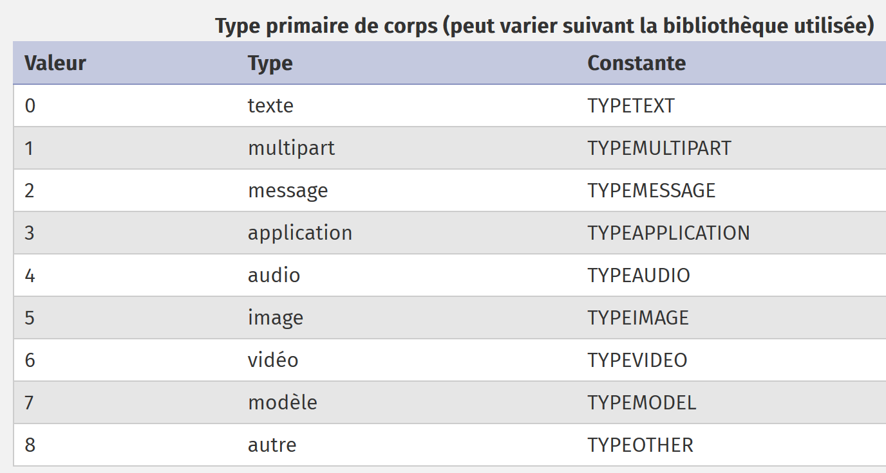
Os valores numéricos do campo [encoding] têm o seguinte significado:

A mensagem registada por [imap-01.php] começava com o seguinte texto:
Return-Path: <php7parlexemple@gmail.com>
Received: from [127.0.0.1] (lfbn-1-11924-110.w90-93.abo.wanadoo.fr. [90.93.230.110])
by smtp.gmail.com with ESMTPSA id e14sm7773816wma.41.2019.05.26.03.11.53
for <php7parlexemple@gmail.com>
(version=TLS1_2 cipher=ECDHE-RSA-AES128-GCM-SHA256 bits=128/128);
Sun, 26 May 2019 03:11:54 -0700 (PDT)
Message-ID: <e613c47a421a66e2cf7f8e319616ec49@swift.generated>
Date: Sun, 26 May 2019 10:11:53 +0000
Subject: test-gmail-via-gmail
From: php7parlexemple@gmail.com
To: php7parlexemple@gmail.com
MIME-Version: 1.0
Content-Type: multipart/mixed; boundary="_=_swift_1558865513_a3a939017128a4cfb867e968bce5df49_=_"
--_=_swift_1558865513_a3a939017128a4cfb867e968bce5df49_=_
Content-Type: multipart/alternative; boundary="_=_swift_1558865513_43c6d2a54065e4917fb06e3327f8d927_=_"
--_=_swift_1558865513_43c6d2a54065e4917fb06e3327f8d927_=_
Content-Type: text/plain; charset=utf-8
Content-Transfer-Encoding: quoted-printable
ligne 1
ligne 2
ligne 3
--_=_swift_1558865513_43c6d2a54065e4917fb06e3327f8d927_=_
Content-Type: text/HTML; charset=utf-8
Content-Transfer-Encoding: quoted-printable
<b>ligne 1<br/>ligne 2<br/>ligne 3</b>
--_=_swift_1558865513_43c6d2a54065e4917fb06e3327f8d927_=_--
--_=_swift_1558865513_a3a939017128a4cfb867e968bce5df49_=_
- as linhas 15) e 33) delimitam a mensagem do tipo [multipart/mixed] (linha m);
- as linhas 18) e 16) delimitam a primeira parte da mensagem: a mensagem em texto simples;
- as linhas 26) e 32) delimitam a segunda parte da mensagem: a mensagem HTML;
Encontramos as diferentes informações da mensagem acima no objeto devolvido por [imap_fetchstructure]:
stdClass Object
(
[type] => 1
[encoding] => 0
[ifsubtype] => 1
[subtype] => MIXED
[ifdescription] => 0
[ifid] => 0
[bytes] => 253599
[ifdisposition] => 0
[ifdparameters] => 0
[ifparameters] => 1
[parameters] => Array
(
[0] => stdClass Object
(
[attribute] => BOUNDARY
[value] => _=_swift_1558872295_5bc8ee2ca8b3723c0b39ca8bbfbebdeb_=_
)
)
[parts] => Array
(
[0] => stdClass Object
(
[type] => 1
[encoding] => 0
[ifsubtype] => 1
[subtype] => ALTERNATIVE
[ifdescription] => 0
[ifid] => 0
[bytes] => 429
[ifdisposition] => 0
[ifdparameters] => 0
[ifparameters] => 1
[parameters] => Array
(
[0] => stdClass Object
(
[attribute] => BOUNDARY
[value] => _=_swift_1558872296_1e51aae79dfca4e7e0af112489fe8734_=_
)
)
[parts] => Array
(
[0] => stdClass Object
(
[type] => 0
[encoding] => 4
[ifsubtype] => 1
[subtype] => PLAIN
[ifdescription] => 0
[ifid] => 0
[lines] => 3
[bytes] => 27
[ifdisposition] => 0
[ifdparameters] => 0
[ifparameters] => 1
[parameters] => Array
(
[0] => stdClass Object
(
[attribute] => CHARSET
[value] => utf-8
)
)
)
[1] => stdClass Object
(
[type] => 0
[encoding] => 4
[ifsubtype] => 1
[subtype] => HTML
[ifdescription] => 0
[ifid] => 0
[lines] => 1
[bytes] => 40
[ifdisposition] => 0
[ifdparameters] => 0
[ifparameters] => 1
[parameters] => Array
(
[0] => stdClass Object
(
[attribute] => CHARSET
[value] => utf-8
)
)
)
)
)
- linha 3: a mensagem é do tipo MIME (Multipurpose Internet Mail Extensions) [multipart];
- linha 4: a mensagem está codificada em 7 bits;
- linha 5: [ifsubtype]=1 indica que existe um campo [subtype] na estrutura;
- linha 6: o campo [subtype] designa um subtipo MIME, neste caso o tipo [mixed]. No total, o tipo MIME do documento é [multipart/mixed];
- linha 7: [ifdescription]=0 indica que não existe o campo [description] na estrutura;
- linha 8: [ifid]=0 indica que não existe o campo [id] na estrutura;
- linha 10: [ifdisposition]=0 indica que não existe o campo [disposition] na estrutura;
- linha 11: [ifdparameters]=0 indica que não existe o campo [dparameters] na estrutura;
- linha 12: [ifparameters]=1 indica que existe um campo [parameters] na estrutura;
- linha 13: o campo [parameters] descreve os parâmetros da mensagem. Neste caso, existe apenas um;
- linhas 15-19: este objeto descreve a linha seguinte da mensagem de texto:
Estas linhas servem para delimitar a mensagem. Na mensagem recuperada por [imap-01.php], a parte da mensagem que acaba de ser descrita corresponde à linha m). O atributo [boundary] não é o mesmo, pois as capturas de ecrã correspondem à mesma mensagem, mas enviadas em momentos diferentes;
- linha 23: é aqui que começa a estrutura das diferentes partes da mensagem;
- linhas 25-45: esta primeira parte é do tipo [multipart/alternative]. Corresponde à linha p) do texto da mensagem;
- linha 47: esta primeira parte tem, por sua vez, subpartes;
- linhas 47-70: esta primeira subparte é do tipo [text/plain] (linhas 51, 54), está codificada no tipo [ENCQUOTEDPRINTABLE] (linha 52) e possui um parâmetro [charset=utf-8] (linhas 66-67);
- as linhas 49-72 descrevem as linhas s-x da mensagem de texto;
- linhas 74-99: descrevem a segunda subparte da parte [multipart/alternative];
- linhas 74-99: esta segunda subparte é do tipo [text/HTML] (linhas 76, 79), está codificada no tipo [ENCQUOTEDPRINTABLE] (linha 77) e tem um parâmetro [charset=utf-8] (linhas 89-93);
- as linhas 74-99 descrevem as linhas aa-ad da mensagem de texto;
A parte [multipart/alternative] está agora concluída. Inicia-se a parte [application/vnd.openxmlformats-officedocument.wordprocessingml.document] descrita pelo texto seguinte:
Mais uma vez, estas informações encontram-se no objeto devolvido pela função [imap_fetchstructure]:
[1] => stdClass Object
(
[type] => 3
[encoding] => 3
[ifsubtype] => 1
[subtype] => VND.OPENXMLFORMATS-OFFICEDOCUMENT.WORDPROCESSINGML.DOCUMENT
[ifdescription] => 0
[ifid] => 0
[bytes] => 16302
[ifdisposition] => 1
[disposition] => ATTACHMENT
[ifdparameters] => 1
[dparameters] => Array
(
[0] => stdClass Object
(
[attribute] => FILENAME
[value] => Hello from SwiftMailer.docx
)
)
[ifparameters] => 1
[parameters] => Array
(
[0] => stdClass Object
(
[attribute] => NAME
[value] => Hello from SwiftMailer.docx
)
)
)
- linha 1: trata-se da segunda parte da mensagem global. Recorde-se que a primeira parte era do tipo [multipart/alternative];
- linhas 3-6: esta segunda parte é do tipo [application/vnd.openxmlformats-officedocument.wordprocessingml.document] (linhas 3 e 6) e está codificada em Base 64 (linha 4);
- linha 11: esta segunda parte é um anexo (linha 11) e tem dois parâmetros: [filename=Hello from SwiftMailer.docx] (linhas 15-21) e [name=Hello from SwiftMailer.docx] (linhas 26-32). Note-se que este último parâmetro não existe na mensagem de texto. Por conseguinte, foi adicionado na função [imap_fetchstructure];
As linhas 1-36 são reproduzidas para cada um dos cinco anexos da mensagem.
A função [imap_fetch_structure] permite-nos, assim, obter a estrutura de uma mensagem. Esta estrutura define partes que, por sua vez, podem ter subpartes. Para obter o texto de uma parte ou subparte, utiliza-se a função [imap_fetchbody].
Alteramos a função [getMailBody], que nos permite obter o corpo de uma mensagem, da seguinte forma:
function getMailBody($imapResource, int $msgNumber, array $infos, object $infosMail): void {
// recupera-se a estrutura da mensagem
$structure = imap_fetchstructure($imapResource, $msgNumber);
if ($structure !== FALSE) {
// recuperam-se estas diferentes partes
getParts($imapResource, $msgNumber, $infos, $infosMail, $structure);
}
}
function getParts($imapResource, int $msgNumber, array $infos, object $infosMail, stdclass $part, string $sectionNumber = "0"): void {
// cálculo do n.º da secção
if (substr($sectionNumber, 0, 2) === "0.") {
$sectionNumber = substr($sectionNumber, 2);
}
print "-----contenu de la partie n° [$sectionNumber]\n";
// tipo de conteúdo
print "Content-Type: ";
switch ($part->type) {
case TYPETEXT:
print "TEXT/{$part->subtype}\n";
break;
case TYPEMULTIPART:
print "MULTIPART/{$part->subtype}\n";
break;
case TYPEAPPLICATION:
print "APPLICATION/{$part->subtype}\n";
break;
case TYPEMESSAGE:
print "MESSAGE/{$part->subtype}\n";
break;
default:
print "UNKNOWN/{$part->subtype}\n";
break;
}
// tipo de codificação
$encodings=["7 bits", "8 bits", "binaire", "base 64", "quoted-printable", "autre"];
print "Transfer-Encoding : ".$encodings[$part->encoding]."\n";
// passa-se às eventuais subpartes
if (isset($part->parts)) {
for ($i = 1; $i <= count($part->parts); $i++) {
// uma nova parte da mensagem
$subpart = $part->parts[$i - 1];
// chamada recursiva — solicita-se o corpo da parte [$subpart]
getParts($imapResource, $msgNumber, $infos, $infosMail, $subpart, "$sectionNumber.$i");
}
}
}
Comentários
- linha 3: recuperamos a estrutura da mensagem;
- linha 6: solicitamos a visualização das suas diferentes partes, que se encontram na tabela [parts] da estrutura;
- linha 10: a função [getParts] recebe os seguintes parâmetros:
- [$imapResource]: a ligação ao servidor IMAP;
- [$msgNumber]: o número de sequência da mensagem cujas partes se pretendem obter;
- [$infos]: informações para indicar onde armazenar as partes que forem encontradas, no sistema de ficheiros local;
- [$infosMail]: informações gerais sobre o e-mail (remetente, destinatário(s), assunto…;
- [$part]: um objeto que representa uma parte da mensagem;
- [$sectionNumber]: um número de secção (ou parte) da mensagem;
- linhas 17-34: é apresentado o tipo de conteúdo da parte n.º [$section] da mensagem. Para tal, utilizam-se os campos [$part→type] e [$part→subtype] da parte [$part];
- linhas 36-37: é apresentado o tipo de codificação da parte [$sectionNumber];
- linhas 40-47: talvez a parte cujas informações acabámos de apresentar tenha, por sua vez, subpartes;
- linhas 41-46: se for esse o caso, solicita-se a visualização do tipo de conteúdo das diferentes subpartes da parte que acabámos de apresentar. Aqui, faz-se uma chamada recursiva à função [getParts];
Mais uma vez, enviamos um e-mail ao utilizador do Gmail [php7parlexemple@gmail.com] com o script [smtp-02.php] e lemos esse e-mail com o script anterior, [imap-02.php]. Isto produz os seguintes resultados na consola:
------------Lecture de la boîte à lettres [{localhost:110/pop3}]
Connexion établie avec le serveur [{localhost:110/pop3}].
Il y a [1] messages dans la boîte à lettres [{localhost:110/pop3}]
Récupération de la liste des messages non lus de la boîte à lettres [{localhost:110/pop3}]
-----contenu de la partie n° [0]
Content-Type: MULTIPART/MIXED
Transfer-Encoding : 7 bits
-----contenu de la partie n° [1]
Content-Type: MULTIPART/ALTERNATIVE
Transfer-Encoding : 7 bits
-----contenu de la partie n° [1.1]
Content-Type: TEXT/PLAIN
Transfer-Encoding : quoted-printable
-----contenu de la partie n° [1.2]
Content-Type: TEXT/HTML
Transfer-Encoding : quoted-printable
-----contenu de la partie n° [2]
Content-Type: APPLICATION/VND.OPENXMLFORMATS-OFFICEDOCUMENT.WORDPROCESSINGML.DOCUMENT
Transfer-Encoding : base 64
-----contenu de la partie n° [3]
Content-Type: APPLICATION/PDF
Transfer-Encoding : base 64
-----contenu de la partie n° [4]
Content-Type: APPLICATION/VND.OASIS.OPENDOCUMENT.TEXT
Transfer-Encoding : base 64
-----contenu de la partie n° [5]
Content-Type: UNKNOWN/PNG
Transfer-Encoding : base 64
-----contenu de la partie n° [6]
Content-Type: MESSAGE/RFC822
Transfer-Encoding : base 64
-----contenu de la partie n° [6.1]
Content-Type: TEXT/PLAIN
Transfer-Encoding : 7 bits
Fermeture de la connexion réussie.
Conseguimos, de facto, recuperar os diferentes tipos de conteúdo da mensagem, bem como o seu tipo de codificação. A numeração das partes segue a seguinte regra:
- linhas 6-7: a parte [multipart/mixed], que representa a mensagem na íntegra, tem o n.º 0. As diferentes partes deste objeto terão, então, os n.ºs 1, 2…
A mensagem tem, no total, cinco partes:
- linhas 9-10: a parte [multipart/alternative], que tem o n.º 1;
- linhas 17-18: a parte [APPLICATION/VND.OPENXMLFORMATS-OFFICEDOCUMENT.WORDPROCESSINGML.DOCUMENT], que tem o n.º 2. Trata-se do anexo de um ficheiro Word;
- linhas 20-21: a parte [APPLICATION/PDF], com o n.º 3. Trata-se do anexo de um ficheiro PDF;
- linhas 23-24: a parte [APPLICATION/VND.OASIS.OPENDOCUMENT.TEXT], que tem o n.º 4. Trata-se do anexo de um ficheiro OpenOffice;
- linhas 26-27: a parte [UNKNOWN/PNG], com o n.º 5. Trata-se do anexo de um ficheiro de imagem;
- linhas 30-31: a parte [MESSAGE/RFC822], com o n.º 6. Trata-se do anexo de um e-mail;
Quando uma parte tem subpartes, estas são numeradas como x.1, x.2… em que x é o n.º da parte que as engloba. Assim:
- linhas 11-12: a 1.ª parte da parte [multipart/alternative] tem o n.º 1.1. Trata-se de um conteúdo do tipo [text/plain]: a mensagem do e-mail;
- linhas 14-15: a segunda parte da parte [multipart/alternative] tem o n.º 1.2. Trata-se de um conteúdo do tipo [text/HTML]: a mensagem de e-mail em HTML;
- linhas 32-33: a primeira parte do anexo [MESSAGE/RFC822] tem o n.º 6.1. Trata-se de um conteúdo do tipo [text/plain]. Na verdade, de acordo com a norma MIME, a numeração das partes de um anexo de e-mail [MESSAGE/RFC822] difere da regra descrita anteriormente. Assim, a primeira parte do anexo [MESSAGE/RFC822] não tem o n.º 6.1, mas sim outro n.º;
Agora que sabemos como identificar as diferentes partes e subpartes de um e-mail, resta-nos recuperar o seu conteúdo.
O código do script evolui da seguinte forma:
function getParts($imapResource, int $msgNumber, array $infos, object $infosMail, stdclass $part, string $sectionNumber = "0"): void {
// cálculo do n.º da secção
if (substr($sectionNumber, 0, 2) === "0.") {
$sectionNumber = substr($sectionNumber, 2);
}
print "-----contenu de la partie n° [$sectionNumber]\n";
// tipo de conteúdo
print "Content-Type: ";
switch ($part->type) {
case TYPETEXT:
print "TEXT/{$part->subtype}\n";
break;
case TYPEMULTIPART:
print "MULTIPART/{$part->subtype}\n";
break;
case TYPEAPPLICATION:
print "APPLICATION/{$part->subtype}\n";
break;
case TYPEMESSAGE:
print "MESSAGE/{$part->subtype}\n";
break;
default:
print "UNKNOWN/{$part->subtype}\n";
break;
}
// tipo de codificação
$encodings = ["7 bits", "8 bits", "binaire", "base 64", "quoted-printable", "autre"];
print "Transfer-Encoding : " . $encodings[$part->encoding] . "\n";
// trata-se de uma mensagem?
if ($part->type === TYPEMESSAGE) {
// não se vão gerir as subpartes desta mensagem (e-mail anexado)
// exibimos o corpo do e-mail anexado
print imap_fetchbody($imapResource, $msgNumber, $sectionNumber);
} else {
// passamos às eventuais subpartes
if (isset($part->parts)) {
for ($i = 1; $i <= count($part->parts); $i++) {
// uma nova parte da mensagem
$subpart = $part->parts[$i - 1];
// chamada recursiva - solicita-se o corpo da parte [$subpart]
getParts($imapResource, $msgNumber, $infos, $infosMail, $subpart, "$sectionNumber.$i");
}
} else {
// não existem subpartes - exibe-se, então, o corpo da mensagem
print imap_fetchbody($imapResource, $msgNumber, $sectionNumber);
}
}
}
Comentários
- linha 46: a função [imap_fetchbody] recupera o corpo da parte n.º [$sectionNumber] da mensagem. A numeração das partes de uma mensagem segue a regra explicada anteriormente;
- linha 1: começa-se com a secção «0»;
- linha 41: as subpartes desta secção serão então numeradas como «0.1», «0.2», quando deveriam ser numeradas como «1», «2»…
- linhas 3-5: corrige-se esta anomalia;
- linhas 37-43: se a parte atual tiver subpartes, então percorre-se cada uma delas (linhas 38-43). O seu número de secção é [$sectionNumber.$i];
- linhas 44-47: quando já não há subpartes, exibe-se o corpo da parte atual com a função [imap_fetchbody]. No nosso exemplo, trata-se das partes [text/plain], [text/HTML] e dos anexos;
A execução deste script produz os seguintes resultados:
------------Lecture de la boîte à lettres [{localhost:110/pop3}]
Connexion établie avec le serveur [{localhost:110/pop3}].
Il y a [1] messages dans la boîte à lettres [{localhost:110/pop3}]
Récupération de la liste des messages non lus de la boîte à lettres [{localhost:110/pop3}]
-----contenu de la partie n° [0]
Content-Type: MULTIPART/MIXED
Transfer-Encoding : 7 bits
-----contenu de la partie n° [1]
Content-Type: MULTIPART/ALTERNATIVE
Transfer-Encoding : 7 bits
-----contenu de la partie n° [1.1]
Content-Type: TEXT/PLAIN
Transfer-Encoding : quoted-printable
ligne 1
ligne 2
ligne 3
-----contenu de la partie n° [1.2]
Content-Type: TEXT/HTML
Transfer-Encoding : quoted-printable
<b>ligne 1<br/>ligne 2<br/>ligne 3</b>
-----contenu de la partie n° [2]
Content-Type: APPLICATION/VND.OPENXMLFORMATS-OFFICEDOCUMENT.WORDPROCESSINGML.DOCUMENT
Transfer-Encoding : base 64
UEsDBBQABgAIAAAAIQDfpNJsWgEAACAFAAATAAgCW0NvbnRlbnRfVHlwZXNdLnhtbCCiBAIooAAC
AAAAAAAAAAAAAAAAAAAAAAAAAAAAAAAAAAAAAAAAAAAAAAAAAAAAAAAAAAAAAAAAAAAAAAAAAAAA
…
AAAAAAAAAF0mAABkb2NQcm9wcy9jb3JlLnhtbFBLAQItABQABgAIAAAAIQCdxkmwcgEAAMcCAAAQ
AAAAAAAAAAAAAAAAAAgpAABkb2NQcm9wcy9hcHAueG1sUEsFBgAAAAALAAsAwQIAALArAAAAAA==
-----contenu de la partie n° [3]
Content-Type: APPLICATION/PDF
Transfer-Encoding : base 64
JVBERi0xLjUKJcOkw7zDtsOfCjIgMCBvYmoKPDwvTGVuZ3RoIDMgMCBSL0ZpbHRlci9GbGF0ZURl
Y29kZT4+CnN0cmVhbQp4nHWNvQoCMRCE+zzF1sLF2WSTSyAEPD0Lu4OAhdj5AxaC1/j6Rk4s5GSa
…
PDcxQUJGQ0JGQURGODYxM0NBNUJDODNFMDNDNjI1QkQwPgo8NzFBQkZDQkZBREY4NjEzQ0E1QkM4
M0UwM0M2MjVCRDA+IF0KL0RvY0NoZWNrc3VtIC9DMTRCN0Q5N0YwNUU1OTYxQzhDODg0NEI3NkNF
OEIwRQo+PgpzdGFydHhyZWYKMTIzMTQKJSVFT0YK
-----contenu de la partie n° [4]
Content-Type: APPLICATION/VND.OASIS.OPENDOCUMENT.TEXT
Transfer-Encoding : base 64
UEsDBBQAAAgAAAs9uU5exjIMJwAAACcAAAAIAAAAbWltZXR5cGVhcHBsaWNhdGlvbi92bmQub2Fz
aXMub3BlbmRvY3VtZW50LnRleHRQSwMEFAAACAAACz25TgAAAAAAAAAAAAAAABwAAABDb25maWd1
…
AQIUABQACAgIAAs9uU42l0SORAQAABIRAAALAAAAAAAAAAAAAAAAAI8bAABjb250ZW50LnhtbFBL
AQIUABQACAgIAAs9uU4Uf52+LgEAACUEAAAVAAAAAAAAAAAAAAAAAAwgAABNRVRBLUlORi9tYW5p
ZmVzdC54bWxQSwUGAAAAABEAEQBlBAAAfSEAAAAA
-----contenu de la partie n° [5]
Content-Type: UNKNOWN/PNG
Transfer-Encoding : base 64
iVBORw0KGgoAAAANSUhEUgAABiAAAAEMCAYAAABN1n5OAAAACXBIWXMAAA7EAAAOxAGVKw4bAAAg
AElEQVR4nOy9e5TdV3Xn+Zm7aqprlBq1Rq1Wq7XU6opGrXaMMI6jAcfj9ihu4hAehkAghBASICF0
…
AAAAAAAAAAAAAAAAAAAAAAAAAAAAAAAAAAAAAAAAAAAAAAAAAAAAAAAAAAAAAAAAAAAAAAAAAAAA
AAAAAAAAAAAAAAAAAAAAAAAAAAAAAAAAAAAAAAAAAAAAAAAAAAAAAAAAAAAAAAAAAAAAAAAAAAAA
AAAA2Mb8f9Q5r2ohJn6/AAAAAElFTkSuQmCC
-----contenu de la partie n° [6]
Content-Type: MESSAGE/RFC822
Transfer-Encoding : base 64
UmV0dXJuLVBhdGg6IGd1ZXN0QGxvY2FsaG9zdA0KUmVjZWl2ZWQ6IGZyb20gWzEyNy4wLjAuMV0g
KGxvY2FsaG9zdCBbMTI3LjAuMC4xXSkNCglieSBERVNLVE9QLTUyOEk1Q1Ugd2l0aCBFU01UUA0K
…
cjJvaEpuNi9BQUFBQUVsRlRrU3VRbUNDDQotLV89X3N3aWZ0XzE1NTg3NzA1MDJfYzRiODA4Yzk5
YzI3ZGVkMDQ1OTViZDExZjRiYWQxMWJfPV8tLQ0K
Fermeture de la connexion réussie.
Comentários
- linhas 14-16: o conteúdo da mensagem de texto codificado em [quoted-printable] (linha 13);
- linha 20: o conteúdo da mensagem HTML codificada em [quoted-printable] (linha 19);
- linhas 24-28: o conteúdo do ficheiro Word codificado em [base64] (linha 23);
- linhas 32-37: o conteúdo do ficheiro PDF codificado em [base64] (linha 31);
- linhas 41-45: o conteúdo do ficheiro OpenOffice codificado em [base64] (linha 40);
- linhas 50-55: o conteúdo do ficheiro de imagem codificado em [base64] (linha 49);
- linhas 59-63: o conteúdo do e-mail em anexo codificado em [base64] (linha 58);
Agora que:
- sabemos recuperar os textos das diferentes partes de um e-mail;
- conhecemos a codificação desses textos;
podemos guardar esses textos em ficheiros.
O código evolui da seguinte forma:
function getParts($imapResource, int $msgNumber, array $infos, object $infosMail, stdclass $part, string $sectionNumber = "0"): void {
// cálculo do n.º da secção
if (substr($sectionNumber, 0, 2) === "0.") {
$sectionNumber = substr($sectionNumber, 2);
}
print "-----contenu de la partie n° [$sectionNumber]\n";
// tipo de conteúdo
print "Content-Type: ";
switch ($part->type) {
case TYPETEXT:
print "TEXT/{$part->subtype}\n";
break;
case TYPEMULTIPART:
print "MULTIPART/{$part->subtype}\n";
break;
case TYPEAPPLICATION:
print "APPLICATION/{$part->subtype}\n";
break;
case TYPEMESSAGE:
print "MESSAGE/{$part->subtype}\n";
break;
default:
print "UNKNOWN/{$part->subtype}\n";
break;
}
// tipo de codificação
$encodings = ["7 bits", "8 bits", "binaire", "base 64", "quoted-printable", "autre"];
print "Transfer-Encoding : " . $encodings[$part->encoding] . "\n";
// trata-se de uma mensagem?
if ($part->type === TYPEMESSAGE) {
// não se vão tratar as subpartes desta mensagem
savePart($imapResource, $msgNumber, $sectionNumber, $infos, $infosMail);
} else {
// passamos às eventuais subpartes
if (isset($part->parts)) {
for ($i = 1; $i <= count($part->parts); $i++) {
// uma nova parte da mensagem
$subpart = $part->parts[$i - 1];
// chamada recursiva — solicitamos o corpo da parte [$subpart]
getParts($imapResource, $msgNumber, $infos, $infosMail, $subpart, "$sectionNumber.$i");
}
} else {
// não há subpartes — guarda-se, então, o corpo da mensagem
savePart($imapResource, $msgNumber, $sectionNumber, $infos, $infosMail);
}
}
}
- linhas 33 e 45: a exibição do texto de uma parte [$imapResource, $msgNumber, $sectionNumber] do e-mail é agora substituída pelo seu armazenamento num ficheiro;
A função [savePart] é a seguinte:
// gravação de uma parte da mensagem
function savePart($imapResource, int $msgNumber, string $sectionNumber, array $infos, object $infosMail): void {
// pasta de gravação
$outputDir = $infos["output-dir"] . "/message-$msgNumber";
// se a pasta não existir, é criada
if (!file_exists($outputDir)) {
mkdir($outputDir);
}
// estrutura da parte a guardar
$struct = imap_bodystruct($imapResource, $msgNumber, $sectionNumber);
// tipo de documento
$type = $struct->type;
// subtipo de documento
$subtype = "";
if (isset($struct->subtype)) {
$subtype = strtolower($struct->subtype);
}
// analisa-se o tipo da parte
switch ($type) {
case TYPETEXT:
// caso da mensagem de texto: text/xxx
switch ($subtype) {
case plain:
saveText("$outputDir/message.txt", 0, imap_fetchBody($imapResource, $msgNumber, $sectionNumber), $infosMail, $struct);
break;
case HTML:
saveText("$outputDir/message.HTML", 1, imap_fetchBody($imapResource, $msgNumber, $sectionNumber), $infosMail, $struct);
break;
}
break;
default:
// outros casos — apenas nos interessamos pelos anexos
if (isset($struct->disposition)) {
$disposition = strtolower($struct->disposition);
if ($disposition === "attachment") {
// trata-se de um anexo — guarda-se o mesmo
saveAttachment($imapResource, $msgNumber, $sectionNumber, $outputDir, $struct);
}
} else {
// não se processará esta parte
print "Partie [$sectionNumber] ignorée\n";
}
break;
}
}
- linhas 3-8: criação do ficheiro de cópia de segurança. Este ficheiro tem o número da mensagem cujas partes estão a ser analisadas;
- linha 10: a parte da mensagem a guardar é definida de forma única pelos três parâmetros [$imapResource, $msgNumber, $sectionNumber]. A estrutura desta parte é solicitada através da função [imap_bodystruct];
- linha 12: recupera-se o tipo principal da parte da mensagem;
- linhas 13-17: recupera-se o seu subtipo;
- linhas 20-30: processam-se os dois tipos de conteúdo: [text/plain] (linhas 23-25) e [text/HTML] (linhas 26-28). Os restantes tipos [text/xx] são ignorados;
- linha 24: o texto da parte [text/plain] será guardado num ficheiro [message.txt];
- linha 27: o texto da parte [text/HTML] será guardado num ficheiro [message.HTML];
- linhas 31-43: trata-se o caso das partes cujo tipo principal não é [text];
- linha 35: consideram-se apenas os anexos da mensagem;
- linha 37: estes são guardados num ficheiro através da função [saveAttachment];
Resumindo o código anterior:
- guarda as partes [text/plain] e [text/HTML] utilizando a função [saveText]. Estas partes representam o conteúdo do e-mail;
- guarda os diferentes anexos utilizando a função [saveAttachment];
A função [saveText] é a seguinte:
// gravação do texto [$text] da mensagem
function saveText(string $fileName, int $type, string $text, object $infosMail, object $struct) {
// preparação do texto a guardar
// $text está codificado - descodifica-se
switch ($struct->encoding) {
case ENCBASE64:
$text = base64_decode($text);
break;
case ENCQUOTEDPRINTABLE:
$text = quoted_printable_decode($text);
break;
}
// cabeçalhos da mensagem
// de
$from = "From: ";
foreach ($infosMail->from as $expéditeur) {
$from .= $expéditeur->mailbox . "@" . $expéditeur->host . ";";
}
// para
$to = "To: ";
foreach ($infosMail->to as $destinataire) {
$to .= $destinataire->mailbox . "@" . $destinataire->host . ";";
}
// assunto
$subject = "Subject: " . $infosMail->subject;
// criação do texto a registar
switch ($type) {
case 0:
// text/plain
$contents = "$from\n$to\n$subject\n\n$text";
break;
case 1:
// text/HTML
$contents = "$from<br/>\n$to<br/>\n$subject<br/>\n<br/>\n$text";
break;
}
// criação do ficheiro
print "sauvegarde d'un message dans [$fileName]\n";
// criação do ficheiro
if (! file_put_contents($fileName, $contents)) {
// falha na criação do ficheiro
print "Impossible de créer le fichier [$fileName]\n";
}
}
Comentários
- linha 1:
- [$fileName] é o nome do ficheiro no qual será guardado o texto [$text];
- [$type]: tem o valor 0 para um ficheiro de texto e 1 para um ficheiro HTML;
- [$text]: é o texto a guardar. Mas é necessário descodificá-lo primeiro, pois está codificado;
- [$infosMail]: contém informações gerais sobre o e-mail. Vamos utilizar os campos [from, to, subject];
- [$struct]: é a estrutura que descreve a parte do e-mail que estamos a guardar. Isto vai permitir-nos saber o tipo de codificação do texto a guardar;
- linhas 4-12: descodificamos o texto a guardar;
- linhas 13-25: recuperamos as informações [from, to, subject] do e-mail;
- linhas 27-36: consoante o tipo (0 ou 1) do texto a guardar, constrói-se um texto simples (linha 30) ou um texto HTML (linha 34);
- linha 40: o texto completo é guardado no ficheiro [$fileName];
Os anexos são, por sua vez, guardados com a seguinte função [saveAttachment]:
// gravação de um anexo
function saveAttachment($imapResource, int $msgNumber, string $sectionNumber, string $outputDir, object $struct) {
// análise da estrutura do anexo
// tentativa de recuperar o nome do ficheiro no qual guardar o anexo
// esse nome encontra-se nos [dparameters] da estrutura
if (isset($struct->dparameters)) {
// recuperam-se os [dparameters]
$dparameters = $struct->dparameters;
$fileName = "";
// percorre-se a tabela dos [dparameters]
foreach ($dparameters as $dparameter) {
// cada [dparameter] é um objeto com dois atributos [attribute, value]
$attribute = strtolower($dparameter->attribute);
// o atributo [filename] corresponde ao nome do ficheiro a criar
// neste caso, o nome do ficheiro encontra-se em [$dparameter->value]
if ($attribute === "filename") {
$fileName = $dparameter->value;
break;
}
}
// se não tiver sido encontrado nenhum nome de ficheiro, consulta-se o atributo [parameters] da estrutura
if ($fileName === "" && isset($struct->parameters)) {
// recuperam-se os [parameters]
$parameters = $struct->parameters;
foreach ($parameters as $parameter) {
// cada parâmetro é um dicionário com duas chaves [attribute, value]
$attribute = strtolower($parameter->attribute);
// se o atributo for [name], então [value] é o nome do ficheiro
if ($attribute === "name") {
$fileName = $parameter->value;
// o nome do ficheiro pode estar codificado
// por exemplo =?utf-8?Q?Cursos-Tutoriais-Serge-Tah=C3=A9-1568x268=2Ep
// recuperamos a codificação com uma expressão regular
$champs = [];
$match = preg_match("/=\?(.+?)\?/", $fileName, $champs);
// se houver correspondência, então descodifica-se o nome do ficheiro
if ($match) {
$fileName = iconv_mime_decode($fileName, 0, $champs[1]);
}
break;
}
}
}
}
// se tiver sido encontrado um nome de ficheiro, guarda-se o anexo
if ($fileName !== "") {
// guardar o anexo
$fileName = "$outputDir/$fileName";
print "sauvegarde de l'attachement dans [$fileName]\n";
// criação do ficheiro
if ($file = fopen($fileName, "w")) {
// recuperamos o texto codificado do anexo
$text = imap_fetchbody($imapResource, $msgNumber, $sectionNumber);
// o anexo está codificado — descodifica-se
switch ($struct->encoding) {
// base 64
case ENCBASE64:
$text = base64_decode($text);
break;
// quoted printable
case ENCQUOTEDPRINTABLE:
$text = quoted_printable_decode($text);
break;
default:
// os restantes casos são ignorados
break;
}
// gravação do texto no ficheiro
fputs($file, $text);
// fecho do ficheiro
fclose($file);
} else {
// falha na criação do ficheiro
print "L'attachement n'a pu être sauvegardé dans [$fileName]\n";
}
}
}
Comentários
- linha 2: a função [saveAttachment] aceita os seguintes parâmetros:
- [$imapResource, int $msgNumber, string $sectionNumber] define de forma única a parte IMAP a guardar;
- [string $outputDir] é a pasta de gravação;
- [object $struct] descreve a estrutura da parte da mensagem a guardar;
- linhas 6-44: procura-se o nome do ficheiro associado ao anexo. Utilizar-se-á esse mesmo nome de ficheiro para o guardar. O nome do ficheiro do anexo encontra-se na tabela [$struct→dparameters] ou na tabela [$struct→parameters], ou mesmo em ambas;
- linhas 30-40: se o nome do ficheiro contiver caracteres não codificados em 7 bits, então foi codificado em [quoted-printable]. Nesse caso, em [$struct→dparameters], o atributo chama-se [fileName*] em vez de [fileName]. Isto significa que não cumpriu a condição da linha 16. O nome do ficheiro é então procurado na tabela [$struct→parameters];
- linha 32: um exemplo de nome de ficheiro codificado. Tem o seguinte formato =?codage_original?codage_actuel?nom_encodé. Assim, o nome [=?utf-8?Q?Cours-Tutoriels-Serge-Tah=C3=A9-1568x268=2Ep] significa que o nome do ficheiro era UTF-8 e que atualmente é [quoted-printable] (Q);
- linha 38: o nome do ficheiro é descodificado com a função [iconv_mime_decode], que aceita aqui três parâmetros:
- a cadeia a descodificar;
- deixar em 0 por predefinição;
- o conjunto de caracteres a utilizar para representar a cadeia descodificada. Este parâmetro está presente na cadeia a descodificar. É obtido através de uma expressão regular nas linhas 34-35;
- linhas 45-75: guarda-se o anexo num ficheiro com o nome que foi encontrado;
Para testar o script [imap-02.php], enviamos primeiro um e-mail para [guest@localhost] com a seguinte configuração:
Existem, portanto, cinco anexos.
Lemos o e-mail enviado com [imap-02.php] e a seguinte configuração:
Os resultados da consola são os seguintes:
------------Lecture de la boîte à lettres [{localhost:110/pop3}]
Connexion établie avec le serveur [{localhost:110/pop3}].
Il y a [1] messages dans la boîte à lettres [{localhost:110/pop3}]
Récupération de la liste des messages non lus de la boîte à lettres [{localhost:110/pop3}]
-----contenu de la partie n° [0]
Content-Type: MULTIPART/MIXED
Transfer-Encoding : 7 bits
-----contenu de la partie n° [1]
Content-Type: MULTIPART/ALTERNATIVE
Transfer-Encoding : 7 bits
-----contenu de la partie n° [1.1]
Content-Type: TEXT/PLAIN
Transfer-Encoding : quoted-printable
sauvegarde d'un message dans [output/localhost-pop3/message-1/message.txt]
-----contenu de la partie n° [1.2]
Content-Type: TEXT/HTML
Transfer-Encoding : quoted-printable
sauvegarde d'un message dans [output/localhost-pop3/message-1/message.HTML]
-----contenu de la partie n° [2]
Content-Type: APPLICATION/VND.OPENXMLFORMATS-OFFICEDOCUMENT.WORDPROCESSINGML.DOCUMENT
Transfer-Encoding : base 64
sauvegarde de l'attachement dans [output/localhost-pop3/message-1/Hello from SwiftMailer.docx]
-----contenu de la partie n° [3]
Content-Type: APPLICATION/PDF
Transfer-Encoding : base 64
sauvegarde de l'attachement dans [output/localhost-pop3/message-1/Hello from SwiftMailer.pdf]
-----contenu de la partie n° [4]
Content-Type: APPLICATION/VND.OASIS.OPENDOCUMENT.TEXT
Transfer-Encoding : base 64
sauvegarde de l'attachement dans [output/localhost-pop3/message-1/Hello from SwiftMailer.odt]
-----contenu de la partie n° [5]
Content-Type: UNKNOWN/PNG
Transfer-Encoding : base 64
sauvegarde de l'attachement dans [output/localhost-pop3/message-1/Cours-Tutoriels-Serge-Tahé-1568x268.png]
-----contenu de la partie n° [6]
Content-Type: MESSAGE/RFC822
Transfer-Encoding : base 64
sauvegarde de l'attachement dans [output/localhost-pop3/message-1/test-localhost.eml]
Fermeture de la connexion réussie.
Done.
Encontramos os ficheiros guardados na pasta [output/localhost-pop3/message-N]:

16.6.6. Cliente POP3 / IMAP com a biblioteca [php-mime-mail-parser]
No script anterior [imap-02.php], conseguimos guardar:
- os conteúdos [text/plain] e [text/HTML] do e-mail;
- os anexos do e-mail;
No caso de um anexo do tipo [message/rfc822], também guardámos o conteúdo do anexo. No entanto, este tipo de anexo é, ele próprio, um e-mail que, por sua vez, contém os conteúdos [text/plain] e [text/HTML], bem como anexos. Podemos, então, deparar-nos com a seguinte situação:
- um [mail 1] cuja estrutura é análoga à de um anexo do tipo [message/rfc822];
- um [mail 2] anexado ao e-mail 1;
- um [mail 3] anexado ao e-mail 2;
- etc…
O script [imap-02.php] guarda o conteúdo de [mail 1] (textos e anexos). Guarda [mail 2] como documento anexado, mas fica por aí. Não tenta analisar o [mail 2] para extrair os textos e os anexos. Poder-se-ia pensar que bastaria aplicar ao [mail 2] o que foi feito para o [mail 1]. Uma chamada recursiva ao método que processava o [mail 1] poderia, então, ser suficiente para obter o conteúdo de todos os e-mails aninhados uns nos outros. Infelizmente, as partes de [mail 2] são numeradas com uma lógica diferente da utilizada para [mail 1], o que impede a utilização do mesmo algoritmo nos dois casos, a menos que se recorra a uma lógica bastante complexa para calcular os números das partes de um e-mail, independentemente da posição deste no conjunto de e-mails aninhados.
O script [imap-02.php] já era complexo. Para evitar torná-lo ainda mais complexo para gerir os conteúdos dos e-mails aninhados, vamos utilizar a biblioteca [php-mime-mail-parser] disponível no GitHub (maio de 2019) em URL [https://github.com/php-mime-mail-parser/php-mime-mail-parser] e escrita por Vincent Dauce.
16.6.6.1. Instalação da biblioteca [php-mime-mail-parser]
A página de apresentação da biblioteca indica como instalá-la no Windows:
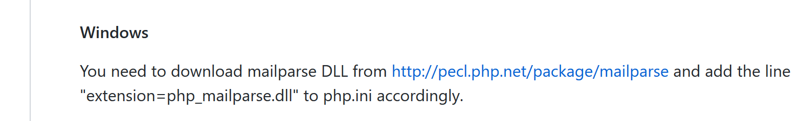
Existem duas etapas para o OS no Windows:
télécharger une DLL ;
modifier le fichier [php.ini] qui configure PHP ;
LA DLL da biblioteca [mailparse] está disponível na URL [http://pecl.php.net/package/mailparse] (maio de 2019);

- no [2], selecione a versão mais recente e estável da biblioteca;

- em [3], escolha a versão do PHP que utiliza (neste documento é o PHP 7.2);
- em [4], escolha a versão do seu OS para Windows (neste caso, é um Windows de 64 bits). Escolhe-se a versão [Thread Safe];
Para saber a versão do PHP descarregada com o Laragon, abra um [Terminal] a partir da janela do Laragon e digite o seguinte comando:
C:\myprograms\laragon-lite\www
λ php -v
PHP 7.2.11 (cli) (built: Oct 10 2018 02:04:07) ( ZTS MSVC15 (Visual C++ 2017) x64 )
Copyright (c) 1997-2018 The PHP Group
Zend Engine v3.2.0, Copyright (c) 1998-2018 Zend Technologies
A versão do PHP 7.2.11 é indicada na linha 3. A mesma linha indica a versão do Windows utilizada para a compilação (32 ou 74 bits).
Depois de obter o ficheiro DLL, é necessário copiá-lo para a pasta [<laragon>/bin/php/<version-php>/ext] [5]:

Feito isto, é necessário ativar esta extensão no ficheiro [php.ini], que configura o PHP (ver parágrafo «ligação»):

É provável que a linha [7] não exista e que seja necessário adicioná-la manualmente.
Depois de ativada a extensão, é possível verificar a sua validade digitando o seguinte comando num terminal do Laragon:
C:\myprograms\laragon-lite\www
λ php --ini
Configuration File (php.ini) Path: C:\windows
Loaded Configuration File: C:\myprograms\laragon-lite\bin\php\php-7.2.11-Win32-VC15-x64\php.ini
Scan for additional .ini files in: (none)
Additional .ini files parsed: (none)
O comando [php –-ini] carrega o ficheiro de configuração da linha 4. Em seguida, irá carregar os DLL de todas as extensões ativadas no [php.ini]. Se alguma delas estiver incorreta, isso será assinalado. Assim, a validade do ficheiro DLL adicionado ao [php_mailparse.dll] será verificada. Pode ser declarado incorreto por várias razões, sendo as mais frequentes as seguintes:
- tenha descarregado um ficheiro DLL que não corresponde à versão do PHP utilizada;
- transferiu um ficheiro DLL de 32 bits, quando possui um PHP de 64 bits, ou vice-versa;
Depois de ativar e verificar a extensão, pode-se avançar para a instalação da biblioteca [php-mime-mail-parser]:

O comando [8] deve ser introduzido num terminal Laragon (ver parágrafo com o link):

- no [1], verifique se está na pasta [<laragon>/www];
- em [2], o comando de instalação da biblioteca [php-mime-mail-parser];
- em [3], nada foi instalado aqui porque a biblioteca [php-mime-mail-parser] já estava instalada;
A instalação da biblioteca [php-mime-mail-parser] é efetuada na pasta [<laragon>/www/vendor]:


- em [2-3], os ficheiros-fonte da biblioteca [php-mime-mail-parser];
Agora que o ambiente de trabalho foi instalado, podemos passar à escrita do script [imap-03.php].
16.6.6.2. O script [imap-03.php]
O script [imap-03.php] utiliza o mesmo ficheiro de configuração [config-imap-01.json] que os scripts anteriores:
O script [imap-03.php] é o seguinte:
<?php
// cliente IMAP (Internet Message Access Protocol) que permite ler e-mails
// escrito com a biblioteca [php-mime-mail-parser]
// disponível emURL [https://github.com/php-mime-mail-parser/php-mime-mail-parser] (maio de 2019)
//
// respeito rigoroso dos tipos declarados dos parâmetros das funções
declare (strict_types=1);
// gestão de erros
error_reporting(E_ALL & ~ E_WARNING & ~E_DEPRECATED & ~E_NOTICE);
//ini_set("display_errors", "off");
//
// dependências
require_once 'C:/myprograms/laragon-lite/www/vendor/autoload.php';
// parâmetros de leitura de e-mail
const CONFIG_FILE_NAME = "config-imap-01.json";
// recuperar a configuração
if (!file_exists(CONFIG_FILE_NAME)) {
print "Le fichier de configuration " . CONFIG_FILE_NAME . " n'existe pas";
exit;
}
$mailboxes = \json_decode(\file_get_contents(CONFIG_FILE_NAME), true);
// leitura das caixas de correio
foreach ($mailboxes as $name => $infos) {
// acompanhamento
print "------------Lecture de la boîte à lettres [$name]\n";
// leitura da caixa de correio
readmailbox($name, $infos);
}
// fim
exit;
Comentários
- linhas 18-23: o conteúdo do ficheiro de configuração é inserido no dicionário [$mailboxes];
- linhas 26-31: cada caixa de correio é lida pela função [readmailbox] (linha 30). Esta função lê, na verdade, as mensagens não lidas da caixa de correio. Uma caixa de correio corresponde ao endereço de e-mail de um determinado utilizador;
A função [readmailbox] é a seguinte:
function readmailbox(string $name, array $infos): void {
// estabelecer ligação
$imapResource = imap_open($name, $infos["user"], $infos["password"]);
if (!$imapResource) {
// falha
print "La connexion au serveur [$name] a échoué : " . imap_last_error() . "\n";
exit;
}
// Ligação estabelecida
print "Connexion établie avec le serveur [$name].\n";
// total de mensagens na caixa de correio
$nbmsg = imap_num_msg($imapResource);
print "Il y a [$nbmsg] messages dans la boîte à lettres [$name]\n";
// mensagens não lidas na caixa de correio atual
if ($nbmsg > 0) {
print "Récupération de la liste des messages non lus de la boîte à lettres [$name]\n";
$msgNumbers = imap_search($imapResource, 'UNSEEN');
if ($msgNumbers === FALSE) {
print "Il n'y a pas de nouveaux messages dans la boîte à lettres [$name]\n";
} else {
// Percorrer a lista de mensagens não lidas
foreach ($msgNumbers as $msgNumber) {
print "---message n° [$msgNumber]\n";
// recuperar o corpo da mensagem n.º $msgNumber
getMailBody($imapResource, $msgNumber, $infos);
// se o protocolo for POP3, a mensagem é eliminada após ter sido recuperada
$pop3 = $infos["pop3"];
if ($pop3 !== NULL) {
// marca-se a mensagem como «a eliminar»
imap_delete($imapResource, $msgNumber);
}
}
// fim da leitura das mensagens não lidas
if ($pop3 !== NULL) {
// eliminam-se as mensagens marcadas como «a eliminar»
imap_expunge($imapResource);
}
}
}
// encerramento da ligação
$imapClose = imap_close($imapResource);
if (!$imapClose) {
// falha
print "La fermeture de la connexion a échoué : " . imap_last_error() . "\n";
} else {
// sucesso
print "Fermeture de la connexion réussie.\n";
}
}
Comentários
O código da função [readmailbox] é o mesmo dos scripts anteriores.
A função [getMailBody] (linha 25), que analisa o corpo de uma mensagem (conteúdo + anexos), é a seguinte:
// análise do corpo da mensagem
function getMailBody($imapResource, int $msgNumber, array $infos): void {
// recupera-se o texto completo da mensagem
$text = imap_fetchbody($imapResource, $msgNumber, "");
if ($text === FALSE) {
print "Le corps du message [$msgNumber] n'a pu être récupéré";
return;
}
// criação de um analisador que irá analisar o texto da mensagem
$parser = (new PhpMimeMailParser\Parser())->setText($text);
// recuperam-se as diferentes partes da mensagem
$outputDir = $infos["output-dir"] . "/message-$msgNumber";
getParts($parser, $msgNumber, $outputDir);
}
Comentários
- linha 2: a função [getMailBody] aceita três parâmetros:
- [$imapResource]: o recurso IMAP ao qual se está ligado;
- [$msgNumber]: o número da mensagem (na caixa de correio) a ser processada;
- [$infos]: informações diversas sobre a caixa de correio a ser processada;
- linha 4: recupera-se a mensagem n.º [$msgNumber] na íntegra;
- linhas 5-8: caso em que o conteúdo da mensagem não tenha podido ser recuperado;
- linha 10: começa-se a utilizar a biblioteca [php-mime-mail-parser]. O objeto [$parser] será encarregado de analisar o texto da mensagem;
- linha 12: [$outputDir] será a pasta na qual serão guardados os conteúdos de texto e os anexos da mensagem n.º [$msgNumber];
- linha 13: solicita-se à função [getParts] que identifique as diferentes partes (conteúdos de texto e anexos) da mensagem n.º [$msgNumber] e que as guarde na pasta [$outputDir];
A função [getParts] é a seguinte:
// recuperação das diferentes partes de uma mensagem
function getParts(PhpMimeMailParser\Parser $parser, int $msgNumber, string $outputDir): void {
// cria-se a pasta de armazenamento da mensagem, se necessário
if (!file_exists($outputDir)) {
if (!mkdir($outputDir)) {
print "Le dossier [$outputDir] n'a pu être créé\n";
return;
}
}
// recuperam-se os cabeçalhos da mensagem
$arrayHeaders = $parser->getHeaders();
// guardam-se as mensagens de texto
$parts = $parser->getInlineParts("text");
for ($i = 1; $i <= count($parts); $i++) {
print "-- Sauvegarde d'un message de type [text/plain]\n";
saveMessage($parts[$i - 1], 0, $arrayHeaders, "$outputDir/message_$i.txt");
}
// guardam-se as mensagens HTML
$parts = $parser->getInlineParts("html");
for ($i = 1; $i <= count($parts); $i++) {
print "-- Sauvegarde d'un message de type [text/html]\n";
saveMessage($parts[$i - 1], 1, $arrayHeaders, "$outputDir/message_$i.html");
}
// recuperam-se os anexos da mensagem
$attachments = $parser->getAttachments();
// n.º do anexo
$iAttachment = 0;
// percorre-se a lista de anexos
foreach ($attachments as $attachment) {
// tipo de anexo
$fileType = $attachment->getContentType();
print "-- Sauvegarde d'un attachement de type [$fileType] dans le fichier [$outputDir/{$attachment->getFilename()}]\n";
// guarda-se o anexo
try {
$attachment->save($outputDir, PhpMimeMailParser\Parser::ATTACHMENT_DUPLICATE_SUFFIX);
} catch (Exception $e) {
print "L'attachement n'a pu être sauvegardé : " . $e->getMessage() . "\n";
}
// caso específico do tipo message/rfc822
if ($fileType === "message/rfc822") {
// o anexo é, ele próprio, uma mensagem — vamos também analisá-lo
// mudamos de diretório de gravação
$iAttachment++;
$outputDir = $outputDir . "/rfc822-$iAttachment";
// altera-se o conteúdo a analisar
$parser->setText($attachment->getContent());
// analisamos a mensagem de forma recursiva
getParts($parser, $msgNumber, $outputDir);
}
}
}
Comentários
- linha 2: a função [getParts] aceita três parâmetros:
- um analisador [$parser] ao qual foi transmitido o texto completo da mensagem a analisar;
- [$msgNumber] é o número da mensagem que está a ser analisada;
- [$outputDir] é a pasta na qual o conteúdo e os anexos da mensagem devem ser guardados;
- linhas 4-9: criação da pasta [$outputDir];
- linha 11: recuperam-se os cabeçalhos da mensagem que está a ser analisada (from, to, subject…);
- linha 13: recuperam-se as partes do e-mail com o tipo [text/plain]. Recupera-se uma tabela;
- linhas 14-17: guardam-se todos os elementos da tabela recuperada, atribuindo a cada um um nome de ficheiro diferente;
- linha 19: recuperam-se as partes do e-mail com o tipo [text/html]. Obtém-se um tabuleiro;
- linhas 20-23: guardam-se todos os elementos da matriz recuperada, atribuindo a cada um um nome de ficheiro diferente;
- linha 25: recupera-se a lista de anexos da mensagem analisada;
- linha 29: percorre-se essa lista;
- linha 24: recupera-se o tipo do anexo (atributo Content-Type);
- linhas 34-38: gravação do anexo na pasta [$outputDir]. O segundo parâmetro, [PhpMimeMailParser\Parser::ATTACHMENT_DUPLICATE_SUFFIX], é uma estratégia de nomenclatura dos anexos. Se [$attachment→getFilename()] for igual a X e o ficheiro X já existir, então a biblioteca [php-mime-mail-parser] tenta os nomes [X_1], [X_2], etc., até encontrar um nome de ficheiro que não exista;
- linha 40: verifica-se se o anexo é um e-mail;
- linhas 41-48: se for esse o caso, esse e-mail é, por sua vez, analisado para extrair conteúdos e anexos;
- linha 44: se [$outputDir] for igual a X e, entre os anexos da mensagem analisada, houver dois e-mails, então o primeiro será guardado na pasta [$outputDir/rfc822-1] e o segundo na pasta [$outputDir/rfc822-2];
- linha 46: o conteúdo do e-mail anexado passa a ser o novo texto a analisar;
- linha 48: chama-se a função [getParts] de forma recursiva para analisar o novo texto;
A função [saveMessage] guarda o conteúdo de texto da mensagem a analisar:
// gravação de uma mensagem de texto
function saveMessage(string $text, int $type, array $arrayHeaders, string $filename): void {
// conteúdo a guardar
$contents = "";
// adição dos cabeçalhos
switch ($type) {
case 0:
// text/plain
foreach ($arrayHeaders as $key => $value) {
$contents .= "$key: $value\n";
}
$contents .= "\n";
break;
case 1:
// text/HTML
foreach ($arrayHeaders as $key => $value) {
$contents .= "$key: $value<br/>\n";
}
$contents .= "<br/>\n";
}
// adição do texto da mensagem
$contents .= $text;
// guardar tudo
if (!file_put_contents($filename, $contents)) {
// falha
print "Le message n'a pu être sauvegardé dans le fichier [$filename]\n";
} else {
// sucesso
print "Le message a été sauvegardé dans le fichier [$filename]\n";
}
}
Comentários
- a função [saveMessage] aceita os seguintes parâmetros:
- [$text]: o texto a guardar;
- [$type]: o tipo de texto (0: text/plain, 1: text/HTML);
- [$arrayHeaders]: os cabeçalhos da mensagem analisada;
- [$filename]: o nome do ficheiro no qual [$text] deve ser guardado;
- linha 4: [$contents] representará a totalidade do texto a guardar;
- linhas 6-20: primeiro, serão guardados todos os cabeçalhos da mensagem (from, to, subject…);
- linhas 16-19: no caso de um texto HTML, termina-se cada linha com a baliza <br/> para que cada cabeçalho apareça sozinho na sua linha num navegador;
- linha 22: adiciona-se aos cabeçalhos o texto da mensagem a guardar;
- linhas 24-30: o conjunto é guardado no ficheiro [$filename];
A utilização da biblioteca [php-mime-mail-parser] facilita consideravelmente a escrita do script de leitura de e-mails.
O script [smtp-02.php] é utilizado para enviar um e-mail ao utilizador [guest@localhost] com a seguinte configuração:
- linhas 11-15: existem cinco anexos;
- linha 15: [test-localhost-2.eml] é um e-mail estruturado da seguinte forma:
- [test-localhost-2.eml] contém 4 anexos (os mesmos das linhas 11-14) e um e-mail anexado;
- o e-mail anexado a [test-localhost-2.eml] contém 4 anexos (os mesmos das linhas 11-14);
O script [imap-03.php] é utilizado para ler a caixa de correio do utilizador [guest@localhost] com a seguinte configuração:
Após a execução, a estrutura de pastas do ficheiro [output/localhost-pop3] ficou da seguinte forma:

- em [1], os 5 anexos do e-mail recebido por [guest@localhost];
- em [2], os 5 anexos do e-mail [test-localhost-2.eml] de [1];
- em [3], os 4 anexos do e-mail [test-localhost.eml] enviado por [2];
As mensagens da consola são as seguintes:
------------Lecture de la boîte à lettres [{localhost:110/pop3}]
Connexion établie avec le serveur [{localhost:110/pop3}].
Il y a [1] messages dans la boîte à lettres [{localhost:110/pop3}]
Récupération de la liste des messages non lus de la boîte à lettres [{localhost:110/pop3}]
---message n° [1]
-- Sauvegarde d'un message de type [text/plain]
Le message a été sauvegardé dans le fichier [output/localhost-pop3/message-1/message_1.txt]
-- Sauvegarde d'un message de type [text/html]
Le message a été sauvegardé dans le fichier [output/localhost-pop3/message-1/message_1.html]
-- Sauvegarde d'un attachement de type [application/vnd.openxmlformats-officedocument.wordprocessingml.document] dans le fichier [output/localhost-pop3/message-1/Hello from SwiftMailer.docx]
-- Sauvegarde d'un attachement de type [application/pdf] dans le fichier [output/localhost-pop3/message-1/Hello from SwiftMailer.pdf]
-- Sauvegarde d'un attachement de type [application/vnd.oasis.opendocument.text] dans le fichier [output/localhost-pop3/message-1/Hello from SwiftMailer.odt]
-- Sauvegarde d'un attachement de type [image/png] dans le fichier [output/localhost-pop3/message-1/Cours-Tutoriels-Serge-Tahé-1568x268.png]
-- Sauvegarde d'un attachement de type [message/rfc822] dans le fichier [output/localhost-pop3/message-1/test-localhost-2.eml]
-- Sauvegarde d'un message de type [text/plain]
Le message a été sauvegardé dans le fichier [output/localhost-pop3/message-1/rfc822-1/message_1.txt]
-- Sauvegarde d'un message de type [text/html]
Le message a été sauvegardé dans le fichier [output/localhost-pop3/message-1/rfc822-1/message_1.html]
-- Sauvegarde d'un attachement de type [application/vnd.openxmlformats-officedocument.wordprocessingml.document] dans le fichier [output/localhost-pop3/message-1/rfc822-1/Hello from SwiftMailer.docx]
-- Sauvegarde d'un attachement de type [application/pdf] dans le fichier [output/localhost-pop3/message-1/rfc822-1/Hello from SwiftMailer.pdf]
-- Sauvegarde d'un attachement de type [application/vnd.oasis.opendocument.text] dans le fichier [output/localhost-pop3/message-1/rfc822-1/Hello from SwiftMailer.odt]
-- Sauvegarde d'un attachement de type [image/png] dans le fichier [output/localhost-pop3/message-1/rfc822-1/Cours-Tutoriels-Serge-Tahé-1568x268.png]
-- Sauvegarde d'un attachement de type [message/rfc822] dans le fichier [output/localhost-pop3/message-1/rfc822-1/test-localhost.eml]
-- Sauvegarde d'un message de type [text/plain]
Le message a été sauvegardé dans le fichier [output/localhost-pop3/message-1/rfc822-1/rfc822-1/message_1.txt]
-- Sauvegarde d'un message de type [text/html]
Le message a été sauvegardé dans le fichier [output/localhost-pop3/message-1/rfc822-1/rfc822-1/message_1.html]
-- Sauvegarde d'un attachement de type [application/vnd.openxmlformats-officedocument.wordprocessingml.document] dans le fichier [output/localhost-pop3/message-1/rfc822-1/rfc822-1/Hello from SwiftMailer.docx]
-- Sauvegarde d'un attachement de type [application/pdf] dans le fichier [output/localhost-pop3/message-1/rfc822-1/rfc822-1/Hello from SwiftMailer.pdf]
-- Sauvegarde d'un attachement de type [application/vnd.oasis.opendocument.text] dans le fichier [output/localhost-pop3/message-1/rfc822-1/rfc822-1/Hello from SwiftMailer.odt]
-- Sauvegarde d'un attachement de type [image/png] dans le fichier [output/localhost-pop3/message-1/rfc822-1/rfc822-1/Cours-Tutoriels-Serge-Tahé-1568x268.png]
Fermeture de la connexion réussie.
Se visualizarmos o [message_1.HTML] do [3] num navegador, obtemos o seguinte: